ベルギー¶
Understanding the Belgian payslip¶
概要¶
Providing employees with a clear, transparent payslip is essential for compliance and employee satisfaction. This guide explains how to interpret a Belgian payslip, detailing key components that impact salary calculations and deductions.
一般情報¶
The first section of the payslip contains the employee's general details. It is crucial to verify the accuracy of the civil status and the number of dependents, as these factors influence tax calculations. Employers can ensure updates are made through their internal salary configurator or employee profile management systems.
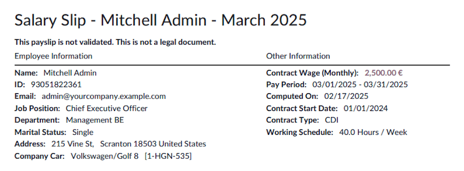Work entries¶
This section outlines time-off applications and their impact on salary. The base salary typically remains constant unless unpaid leave is taken. If an employee has taken unpaid leave, parental leave, or any unexpected absence, their salary will reflect the corresponding deductions.
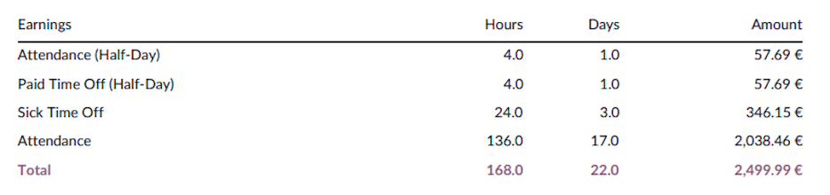Payroll calculation¶
The core of the payslip details various salary components, deductions, and benefits. Below are the primary elements:
Benefits in Kind: If applicable, benefits in kind (such as a mobile or internet subscription or a laptop) are subject to taxation and impact net remuneration.
When a company car is provided for personal use, a taxable benefit (ATN) is added to the employee's salary. This is determined by:
The catalog value and age of the vehicle
The vehicle's CO2 emissions
This benefit is subject to withholding tax and will be adjusted later in the payroll process.
Social Security contributions: A mandatory 13.07% deduction from gross salary is allocated to the National Social Security Office (ONSS). This includes:
Pensions: 7.5%
Health Insurance for Care: 3.55%
Health Insurance for Benefits: 1.15%
Unemployment: 0.87%
Additionally, the employer contributes on average 25% of the employer's contributions to the National Social Security Office.
Employment bonus: A reduction in employee contributions based on gross salary, which is phased out if the salary exceeds a specific threshold.
Withholding taxes: Withholding tax rates are revised annually by the SPF Finances.
The tax amount is influenced by:
Gross salary
Marital status (married, legally cohabiting, or single)
Household composition (children or other dependents)
This serves as an advance payment on professional income tax.
Reduction in withholding tax: A reduction based on gross salary, which is ignored if salary surpasses a specific amount.
Special Social Security contribution: A household income-based tax applicable to all employees covered by social security.
Meal voucher deduction: Employees receive meal vouchers valued for instance at €8 per workday, where:
The employer contributes €6.91
The employee contributes €1.09
Example
5 worked days -> deduction of €5.45 (\(5\times\text{€}1.09\))
22 worked days -> deduction of €23.98 (\(22\times\text{€}1.09\))
Variations in this deduction impact monthly net salary.
Representation fees: An optional net salary component, allocated in two parts:
A fixed portion, independent of working hours
A prorated portion, adjusted for part-time schedules
Net salary: The final amount deposited into the employee's bank account after deductions.
December pay¶
Why a December settlement?¶
An employer must pay a vacation allowance to an employee in December under two conditions:
If the employee has reduced their working hours during the vacation year.
If the employee is unable to take all their vacation days before the end of the year.
In principle, employers must ensure that employees take their annual vacation before December 31. However, certain circumstances may prevent employees from using all their vacation days. In these cases, the employer must pay the simple vacation allowance for unused days before the end of the year. Additionally, if the employee has not received the double vacation allowance earlier in the year (typically in May or June), they are entitled to receive it.
Reduction of working hours¶
When an employee reduces their average working hours with the same employer, the employer must pay the vacation allowance in December of the year in which the reduction occurs, as if the employee had left the company.
Possible scenarios:
Transition to part-time work.
Partial career break.
Thematic leave on a part-time basis.
Partial return to work after a full incapacity period.
The settlement is calculated based on the previous vacation year's earnings and includes:
Simple vacation allowance: 7.67% of the yearly gross salary from the previous year, including any fictitious salary for assimilated interruption days, minus the simple vacation allowance already paid during the vacation year.
Double vacation allowance: 7.67% of the yearly gross salary from the previous year, including any fictitious salary for assimilated interruption days, minus the double vacation allowance already paid during the vacation year.
If all vacation days have been taken before the reduction in working hours, no additional calculation is required.
Inability to use vacation days¶
As a general rule, all vacation days must be used within the vacation year. However, if an employee is unable to take all their vacation due to force majeure or specific suspension reasons, the employer must pay the following by December 31:
Simple vacation allowance for unused days, based on the December salary.
Double vacation allowance if it has not yet been paid, based on the December salary.
Eligible reasons include:
Common illness or accident.
Work accident or occupational disease.
Maternity leave, paternity leave (converted maternity leave), prophylactic leave.
Birth, adoption, or reception leave.
Parental leave or protective maternity leave measures.
New rule (effective end of 2024)¶
Employees unable to take vacation due to the above reasons (except force majeure or protective maternity leave measures) can carry over unused days for up to 24 months. Since the vacation allowance is already paid in December of the vacation year, no additional payment will be made when the carried-over days are used.
Employer payment responsibilities¶
The employer must pay any outstanding simple vacation allowance based on 7.67% of the gross salary from the previous year. However, an exit vacation allowance based on the current year's gross salary is not due.
If an employee reduces their working hours and continues in the same role the following year, an additional vacation allowance calculation may be required in December.
Example calculation¶
In 2013, an employee works full-time (5 days per week).
In 2014, the employee works full-time until June 30, then switches to part-time (5 half-days per week).
The employee takes vacation in August 2014 under the new part-time regime (20 half-days over 4 weeks).
They receive a simple vacation allowance for 20 half-days and a double vacation allowance equivalent to 92% of their monthly salary.
In December 2014, the employee receives additional simple (7.67%) and double (7.67%) vacation allowances based on 2013's gross salary, minus previously paid amounts.
In 2015, if the employee continues part-time, they receive vacation based on part-time hours plus 5 full-time vacation days from the 2014 vacation year.
A second settlement in December 2015 includes additional simple (7.67%) and double (7.67%) vacation allowances based on the 2014 gross salary, minus previously paid amounts.
How to do it in Odoo¶
On a classic payslip issued in December, press the Compute December Holiday Pay button to open a configuration wizard.
Based on the allocated and requested time off, the Simple Holiday Pay N-1 and Double Holiday Pay N-1 for the December payslip are computed (and editable for manual encoding). Click Validate to confirm.
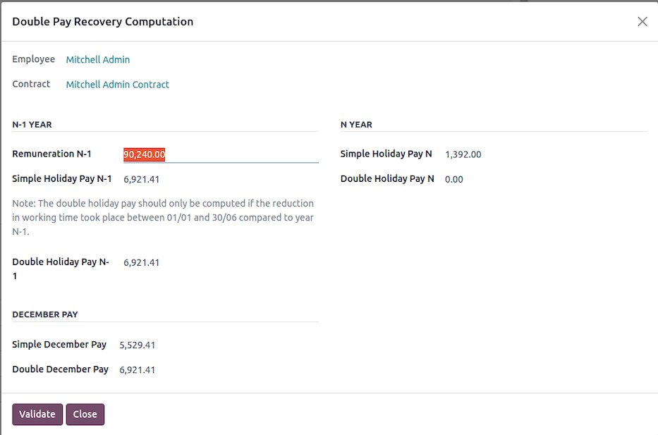After validation, two additional inputs are stored on the payslip, and the payslip is re-computed to take those new remunerations into account.
The simple holiday pay is included into the gross remuneration.
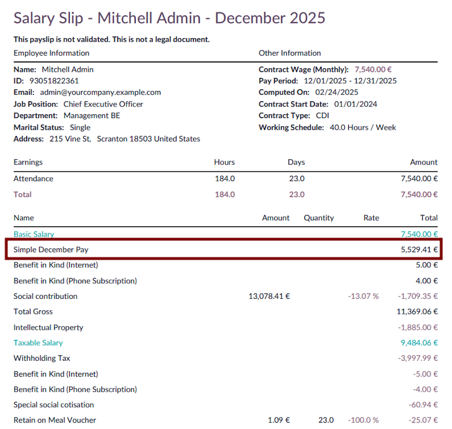The double holiday pay is computed separately and included into the net amount.
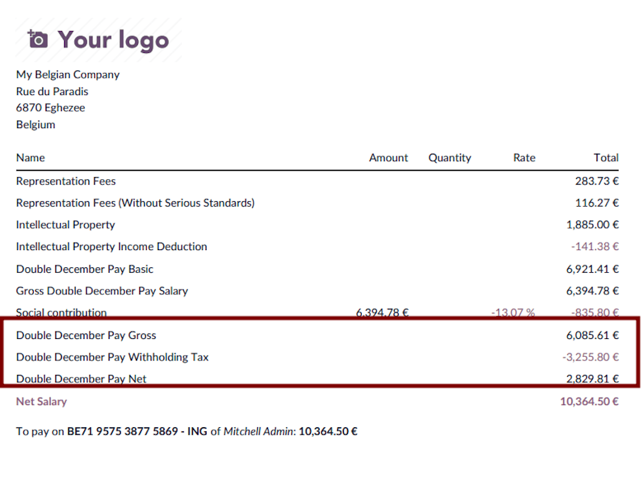Departure: holiday attests¶
概要¶
In Belgium, when an employee leaves a company, the employer is required to provide vacation attestations. These documents help the new employer determine the employee's vacation entitlements and any vacation pay due. Odoo facilitates the automatic generation of these attestations based on payroll and time-off data.
Types of attestations¶
Odoo generates two types of vacation attestations:
For the previous year (N-1): If the employee has not yet taken all the vacation days from the previous year.
For the current year (N): Covering the vacation rights accrued in the year of departure.
Each attestation includes details such as:
The period the employee was employed.
Agreed working time and any modifications.
Gross amounts of single and double vacation pay paid.
Social security contributions paid by the employer.
Number of vacation days already taken.
Additional (European) vacation pay and days.
Calculation logic in Odoo¶
Odoo computes the attestations based on payroll and leave data. The main calculations include:
Retrieving payroll and leave records
The system identifies the employee's payroll records for the current and previous years.
It retrieves validated leave requests and allocations.
Computing gross remuneration
The gross annual salary for both the current and previous years is computed from payroll records.
The average monthly salary is calculated for unpaid leave adjustments.
Time-off calculations
The number of vacation days taken and allocated in the current year is determined.
Unpaid leave days are accounted for separately.
Fictitious remuneration calculation
If unpaid leave was taken, Odoo computes a fictitious remuneration adjustment using the formula:
\[\text{Fictitious Remuneration} = (\text{Unpaid Leave Days} \times \text{Average Monthly Salary} \times 3) \div (13 \times 5)\]
Generating the final attestation
Odoo creates a payroll entry reflecting the vacation pay due.
The attestation document is generated and can be printed or exported.
Two payslips are created:
Payslip for the current year (
termination_payslip_n)This payslip covers the employee's last salary period in the year of termination.
Payslip for the previous year (
termination_payslip_n1)The one accounts the amount of money converted from the untaken time off of previous year.
Each payslip is generated using the appropriate payroll structure, ensuring correct calculations for all entitlements and deductions.
Before computing the final payment, the system gathers necessary payroll data:
Annual gross salary calculation
To estimate the employee's annual gross salary, the system looks for the most recent validated monthly payslip. If a payslip is found, the gross salary from that payslip is multiplied by 12 to get an annual estimate. If no payslip exists, the annual gross salary is set to zero.
European leave recovery
The system retrieves all European leave days (LEAVE216) taken by the employee during the current year. It then calculates the total amount paid for these leaves and determines how much should be deducted.
The deduction follows these principles:
If an employee has taken European holidays (additional vacation days), the amount paid in advance must be recovered.
The recovery is either:
Deducted from the double vacation pay (85%) for the next year.
Or, if the employee leaves, deducted from the final termination payslip.
If leave has been taken, the termination certificate must specify:
The number of European leave days already granted.
The gross allowance corresponding to these days.
To ensure fairness, the system first checks whether a deduction has already been applied in the double vacation pay. If so, only the remaining amount is deducted from the final payslip.
Once the required values are determined, they are recorded in the payslip as additional payroll inputs:
Gross salary reference: Includes the final salary amount plus any fictitious remuneration.
European leave deduction: Deducts the previously paid European leave amounts.
Other inputs: Allocates time off taken, taxable amounts, and any outstanding allocations.
After setting these values, the system computes the payslip to ensure all deductions and payments are correctly applied.
This process ensures that the final termination payslip takes into account all salary components, including annual gross pay, European leave recovery, and any unpaid entitlements. Odoo retrieves past payslips and time-off records to ensure compliance with Belgian payroll regulations.
By automating this process, Odoo minimizes manual intervention, reducing errors and ensuring employees receive the correct termination payments.
How does it work in Odoo?¶
In Odoo, to access the holiday attests process, go to the employee form view and click on (Action) then Departure: Holiday Attests or navigate to .
In the wizard that appears, you can see all the payslips over the current and last year, the time off requests and allocations. You can also encode the unpaid time off you would like to declare on that holiday attest.
Once you're ready, click the Validate & Compute holiday attests button. Two payslips are generated for each considered period (N and N-1).
Once validated, two .pdf documents are generated. One classic payslip and one holiday
attests for the future employer.
Example
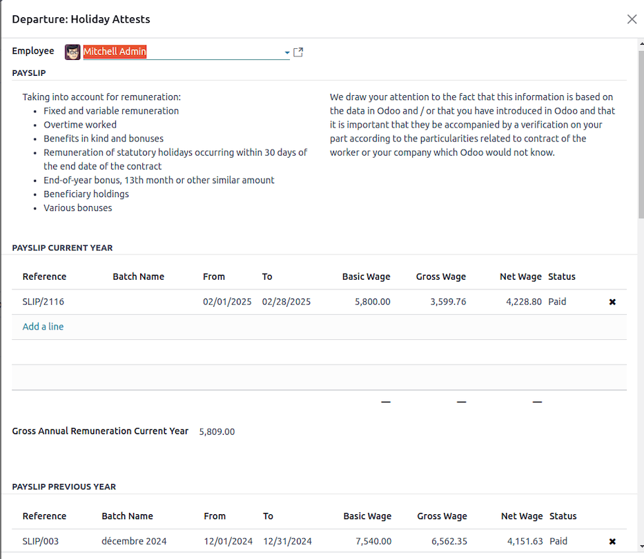 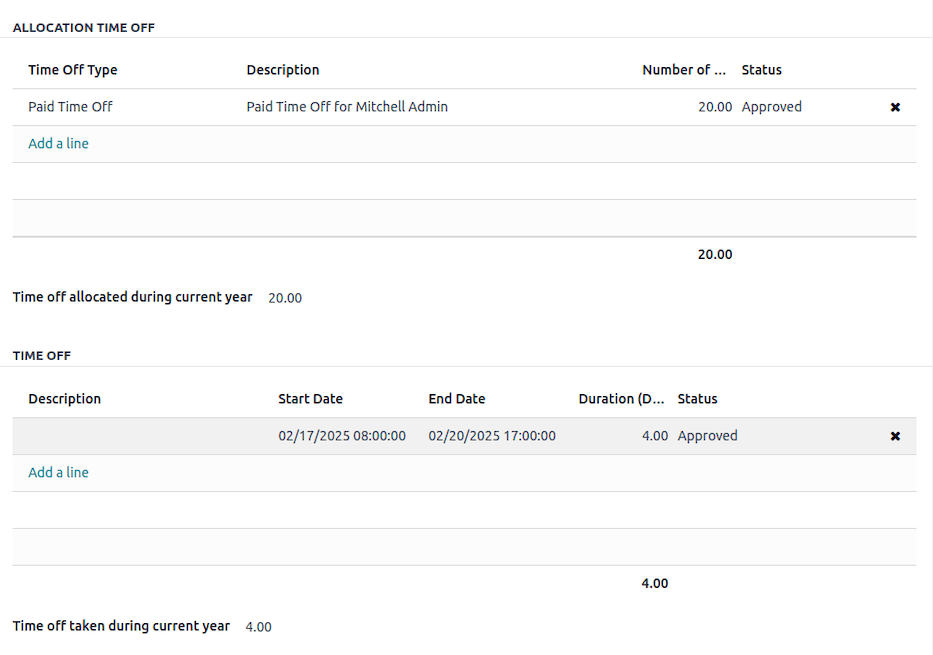 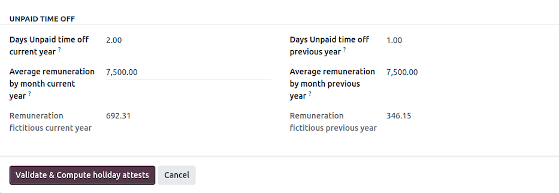 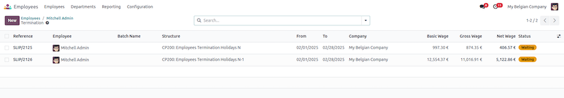In our example, the employee also took one European time off during the N-year.
For year N-1, you can see that all legal time off were taken.
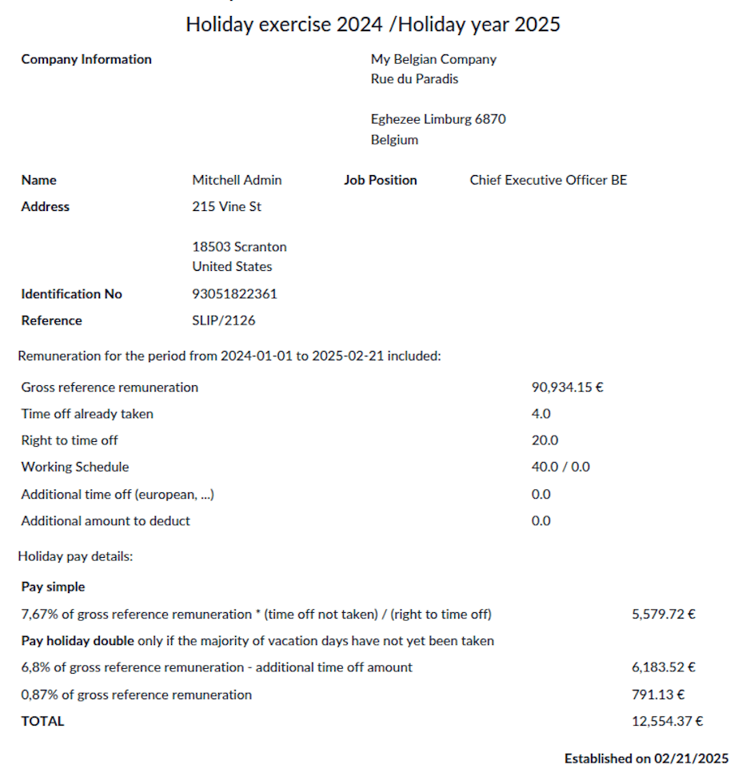 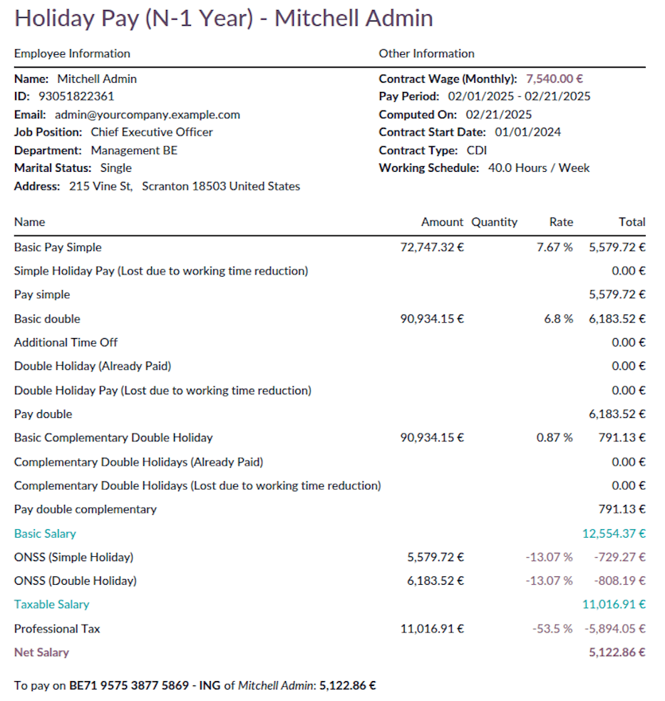For year N, you can also see the number off additional time off (European) and already taken legal time off are taken into account as well.
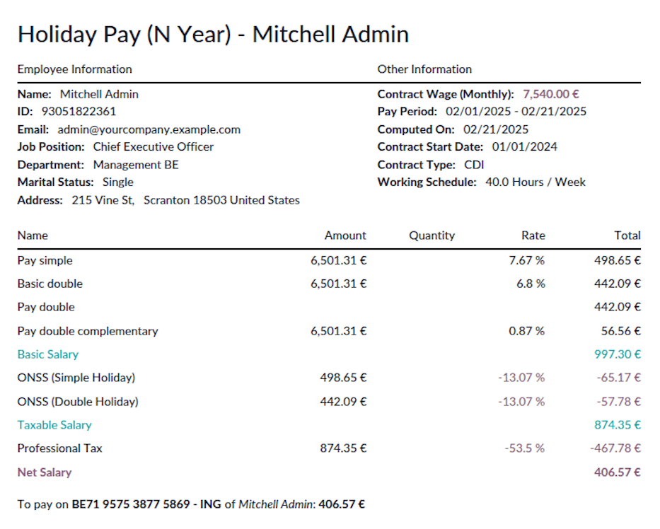Important Notes¶
By using Odoo's automated attestation generation, companies can ensure compliance with Belgian labor laws while reducing manual administrative work.
重要
The feature is only available for companies registered in Belgium.
If the notice period is not set for an employee, Odoo will prompt for this information.
Employers must ensure vacation attestations are provided before the employee needs to submit them to their new employer or the ONEM.
Departure: notice period & termination fees¶
This documentation explains how the employee departure process works in the application, focusing on the notice period calculation and severance pay when the employee does not serve their notice period.
概要¶
This module helps manage employee departures by determining the correct notice period based on seniority, departure reasons, and specific country regulations (Belgium). It also calculates severance pay when the employee does not work during their notice period.
Key features¶
Automatic calculation of notice period start and end dates.
Consideration of public holidays and company-specific schedules.
Calculation of severance pay based on company policies and government rules.
Generation of a final payslip including termination fees.
Notice period calculation¶
The notice period depends on several factors:
The employee's seniority in the company.
The reason for departure (resignation, dismissal, retirement, etc.).
Whether the employee works during the notice period or not.
The salary level before January 1, 2014 (for some cases).
The notice period starts on the first Monday after the departure date unless a specific rule applies (e.g., a mandatory waiting period of three days for certain dismissals).
Notice duration rules¶
The following table shows the duration of the notice period based on the length of service:
For resigned employees¶
在籍期間 (月) |
Notice Period (weeks) |
|---|---|
0 - 3 |
1 |
3 - 6 |
2 |
6 - 12 |
3 |
12 - 18 |
4 |
18 - 24 |
5 |
24 - 48 |
6 |
48 - 60 |
7 |
60 - 72 |
9 |
72 - 84 |
10 |
84 - 96 |
12 |
96+ |
13 |
For dismissed employees¶
在籍期間 (月) |
Notice Period (weeks) |
|---|---|
0 - 3 |
1 |
3 - 4 |
3 |
4 - 5 |
4 |
5 - 6 |
5 |
6 - 9 |
6 |
9 - 12 |
7 |
12 - 15 |
8 |
15 - 18 |
9 |
18 - 21 |
10 |
21 - 24 |
11 |
24 - 36 |
12 |
36 - 48 |
13 |
48 - 60 |
15 |
60 - 72 |
18 |
72 - 84 |
21 |
84 - 96 |
24 |
96 - 108 |
27 |
108 - 120 |
30 |
120 - 132 |
33 |
132 - 144 |
36 |
144 - 156 |
39 |
156 - 168 |
42 |
168 - 180 |
45 |
180 - 192 |
48 |
192 - 204 |
51 |
204 - 216 |
54 |
216 - 228 |
57 |
228 - 240 |
60 |
240 - 252 |
62 |
252 - 264 |
63 |
264 - 276 |
64 |
276 - 288 |
65 |
288+ |
66+ |
Special case: employees hired before 2014¶
For employees who started before January 1, 2014, the notice period calculation is divided into two parts:
Part 1: Seniority acquired before December 31, 2013¶
Lower-level employees (annual gross salary ≤ €32,254): The notice period is 3 months for the first 5 years of seniority, increasing by 1.5 months per additional year.
Higher-level employees (annual gross salary > €32,254): The notice period is 1 month per started year of seniority, with a minimum of 3 months.
Part 2: Seniority acquired from January 1, 2014 onwards¶
The standard notice period rules from 2014 apply to seniority acquired after this date.
The total notice period is the sum of both periods calculated separately.
Severance pay calculation¶
If an employee does not serve their notice period, severance pay is calculated based on:
The remaining notice duration.
The employee's last salary.
Additional compensation such as bonuses, stock options, and insurance contributions.
The severance pay consists of:
The current salary, which corresponds either to the full notice period that should normally be observed or the remaining part of it.
Benefits acquired during the contract (e.g., meal vouchers, company car, mobile phone usage).
The current salary is determined as follows:
The employee's gross monthly salary at the time of dismissal.
All recurring bonuses, except for one-time bonuses (e.g., team work bonus, seniority bonus).
Additional compensation for overtime hours worked over a longer period.
Variable salary (average over the last twelve months).
The system automatically generates a termination payslip including these calculations, ensuring compliance with Belgian labor laws.
How does it work in Odoo?¶
In Odoo, to access the departure process, go to the employee form view and click on (Action) then Departure: Notice Period and payslip or navigate to .
In the wizard that appears, select the reason for departure, provide a description of the departure, and specify the dismissal date. The employee's seniority is calculated based on their contract history, and the notice period is determined accordingly. You can also indicate whether the employee will be working during the notice period.
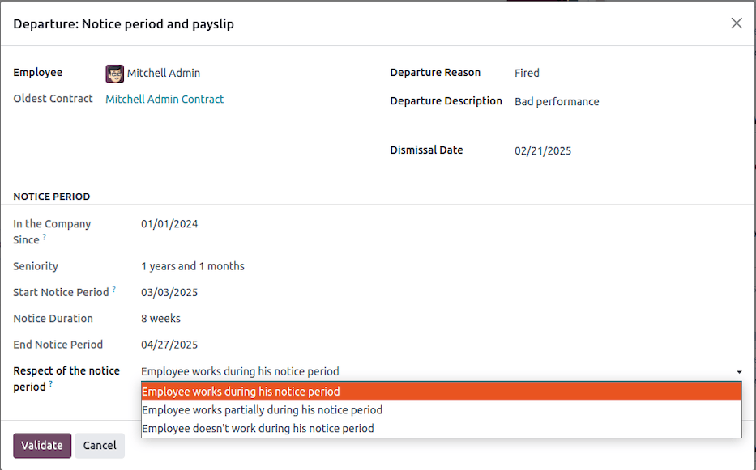If the employee is working during the notice period, there are no termination fees to calculate, and the notice period will be recorded on the employee's form. Click the Validate button.
注釈
If the employee is working partially or not at all, the wizard will generate and calculate a termination fees payslip. Click the Validate & Compute termination fees button.
The payslip takes into account all the salaries and benefits the employee would have received over the course of a year to calculate a virtual annual remuneration. This amount is then prorated based on the notice period to convert it into a gross salary.
A detailed summary is provided on the payslip.
Example
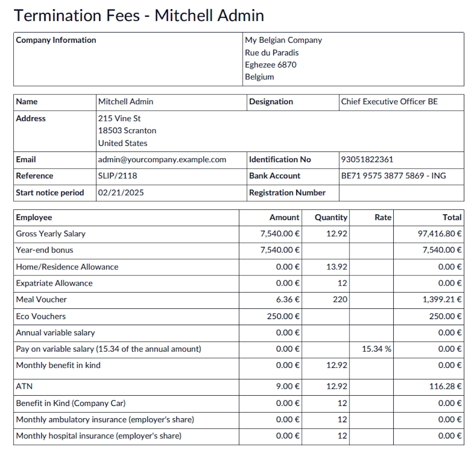 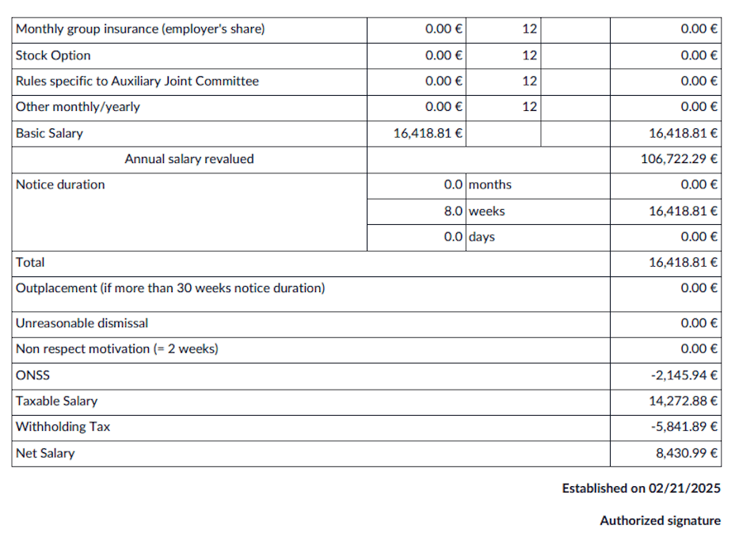結論¶
This module simplifies the departure process by providing clear and automatic calculations for the notice period and severance pay. It helps HR teams ensure compliance and streamline the exit process for employees.
DIMONA¶
What is the Dimona?¶
Obligation¶
All employers, both in the public and private sectors, are required to electronically communicate the entry and exit of their personnel to the National Social Security Office (Royal Decree of November 5, 2002).
This involves the immediate declaration of employment, also known as DIMONA (Déclaration Immédiate - Onmiddellijke Aangifte). Its purpose is to immediately notify social security institutions of the beginning and end of an employment relationship between the worker and the employer.
The declarations submitted by the employer and immediately checked by the NSSO feed into a database called the personnel file. The employer can access it in a secure environment. There are numerous search criteria: they can be based on characteristics and combinations of characteristics.
Failure to comply with this reporting obligation may result in criminal penalties as provided for in Article 181 of the Social Penal Code.
Furthermore, in case of omission of declaration, the employer will owe the NSSO a solidarity contribution.
Concept and terminology¶
Employer-worker relationship¶
The relationship between the "employer" and the "worker" couple. This relationship includes stable data (employer identification number, worker's national identification social security number (NISS), start date of the relationship, and optionally end date), which will be maintained even in case of creation, closure, modification, or cancellation of a period. This relationship begins with the worker's first engagement and ends at the end of their last occupation. In the personnel file, "employer-worker" relationships constitute the first level of consultation. The second level encompasses all Dimona periods;
Dimona period¶
A period is created with each IN declaration, thus at the beginning of each new occupation. It is closed by an exit date at the end of each occupation. The employer-worker relationship, on the other hand, is maintained until the end of the last occupation. Several Dimona periods may or may not succeed each other within the same employer-worker relationship.
Any changes generated by an OUT declaration, a modification (UPDATE), or a cancellation (CANCEL) occur at this second level.
This Dimona period is identified by a "period identification number". It is assigned to each IN declaration and constitutes the unique identification key of a period for submitting OUT, modification, or cancellation declarations.
Dimona number¶
A unique number assigned by the NSSO to each Dimona declaration (IN, OUT, UPDATE, CANCEL,...). For an IN declaration, it is the period identification number. When declarations are submitted via file transfer, multiple Dimona numbers are created: one number per employment relationship included in the structured message;
Dimona characteristics¶
Mandatory data of a Dimona declaration. There are four: the industry sector number, worker type, sub-entity (reserved for certain public sector employers), and user (for temporary workers). Characteristics are always linked to a period. In case of different characteristics, multiple periods can coexist;
Receipt confirmation¶
Confirms for web users that the declaration has been received (appears immediately on the screen);
Receipt acknowledgment¶
Electronic message for batch senders indicating whether the file is usable for the NSSO. This "receipt acknowledgment" contains the ticket number (file identification number) and the file status: accepted or rejected depending on whether the file is readable or not;
通知¶
Electronic message with feedback on the processing of the declaration. The notification is the immediate result of form and content checks. It can be of three types: positive (Dimona accepted), negative (Dimona rejected), or provisional (only in case of problems with worker identification). The provisional notification will always be followed by a positive or negative notification.
For the declaration of students under a student contract (STU), the notification will also contain a warning if the student is declared for more than 475 hours. If the declaration was made via a secure channel, the exact number of days of excess will be communicated.
For the daily declaration of occasional workers in the hospitality industry, the notification will also contain a warning if the worker is declared for more than 50 days and/or for the employer quota, if more than 100 days of occasional work have been declared.
Once you have received this notification, you have five working days to contest the accuracy of the data mentioned therein. At the end of this period, these data will be considered final. For any disputes, you must contact the Eranova Contact Center (tel: 02 511 51 51, email: contactcenter@eranova.fgov.be).
Note that if the employer is affiliated with an approved social secretariat or a full-service secretariat, they may not receive any notification. In this case, notifications are electronically transmitted to the social secretariat or full-service secretariat, even for declarations that the employer has submitted personally. However, the employer has access to the personnel file, where they can view all data.
チャネル¶
The Dimona declaration must be submitted in the form of an electronic message via one of the following channels:
クモの巣
personnel file
file transfer
web service (REST)
Dimona Mobile
The choice of one channel over another has no impact on the declaration. Therefore, you can freely choose the channel you will use.
Any declaration modifications can also be made through any of these four channels. The channel through which the original declaration was submitted plays no role.
A Dimona declaration cannot be submitted via SMS.
Dimona in Odoo¶
手動¶
In Odoo, when you have the Belgian Payroll Localization installed, as soon as you have a contract set to the running stage, it creates an activity for the HR responsible that they need to introduce the Dimona for today with the correct link to the Dimona Platform (the web channel mentioned in the Channels section of this article).
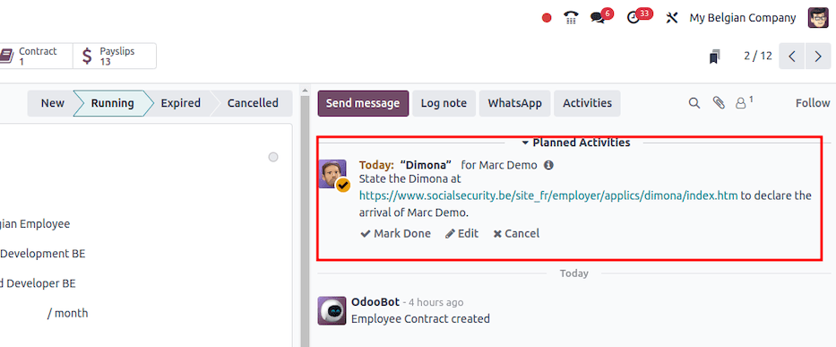自動¶
In Odoo, when you have the Belgian Payroll Localization installed, it is also possible to install the module Belgium - Payroll - Dimona. This module will allow you to perform the 4 main actions needed in the Dimona (as seen in Section 1 of this article):
Open the dimona
Update the dimona
Close the dimona
Cancel the Dimona
These actions answer the different use case explained in Section 1.
Contract and employee data¶
Basically, it checks the contract and employee data needed to create, update, close or cancel.
Error handling¶
If some information is missing or wrongly configured, the system will return errors and you can take corrective action in order to make sure your Dimona is correctly sent, updated, closed or canceled.
Synchronization status¶
The status of sync and errors are shown in the chatter of the contract.
スケジュールされたアクション¶
Finally, the cron checks every day, for all contracts that have the status dimona waiting and triggers the necessary actions to update the dimona status accordingly.
Technical configuration (outside Odoo)¶
Regarding the technical configuration, everything is described in the module information with all the technical prerequisites. If your customer or partner need further assistance with that, they need to contact their IT department or representatives as this is not part of Odoo configuration.
Functional configuration (within Odoo)¶
From the Odoo configuration point of view, navigate to and in the Belgian Localization section for ONSS, configure the following:
ONSS Company ID: VAT Number of the Company
Registration Number: 9 digits code received from the NSSO (ONSS - RSZ)
DMFA Employer Class: 3 digits code received from the NSSO (ONSS - RSZ)
Expeditor Number ONSS: Not Mandatory (see technical documentation of the module for more information)
PEM Certificate, PEM Passphare, KEY file: check the module information for explanation
DmfA - Multifunctional Declaration¶
概要¶
DmfA stands for "Déclaration Multifonctionnelle" or "Multifunctionele Aangifte." It has replaced the quarterly ONSS declaration since the first quarter of 2003. Through this declaration, employers submit salary and working time data for their employees.
These data are processed in a way that allows all social security institutions to work with the same information. The declaration is called "multifunctional" because it is used not only for social security contribution calculations and reductions but also as a data source for institutions managing social security rights and benefits.
Sectors utilizing DmfA data include:
Health insurance
Unemployment benefits
Pensions
Occupational risks (Fedris)
Family allowances
Annual leave
All employers registered with ONSS must submit a DmfA declaration.
Relationship with Dimona and DRS¶
DmfA is closely linked to two other mandatory declarations:
Dimona (immediate declaration)¶
Dimona records the start and end of an employment relationship with an employee.
Who submits the DmfA declaration?¶
Self-declaration options¶
Employers can submit their DmfA declaration themselves via:
Web Submission: Suitable for employers with a small workforce. Declarations are entered directly through the social security portal.
Batch Submission: Designed for large employers or organizations handling multiple declarations (e.g., social secretariats, payroll software providers). Declarations are submitted via file transfer (FTP, SFTP, etc.).
Advantages of web submission¶
Automatic access to the company's employee list: Based on Dimona data. If an employee is missing, they must first be declared via Dimona. After 24 hours, the employee list is updated, allowing for an accurate DmfA submission.
Automatic calculation of net payable amount: Once all required data is entered, the system calculates the total payable amount.
Reduction calculations: The system calculates applicable reductions, except for reductions under code "0001" (personal contribution reductions for low-income workers). Employers need to check the relevant boxes and, if necessary, provide additional details.
Advantages of batch submission¶
Submission of large volumes of declarations: Ideal for organizations managing multiple payrolls.
Quick response on acceptance status: Employers receive immediate feedback on whether their declaration has been accepted.
Error reporting: The system generates a report on detected anomalies, regardless of acceptance status.
Automatic correction of calculation errors: When possible, errors are corrected automatically, and employers are notified of adjustments.
Third-Party submission options¶
Employers who do not wish to submit the DmfA themselves can delegate the task to:
Accredited Social Secretariats: These organizations handle payroll and declaration tasks on behalf of employers.
Service Providers: These may be companies or individuals with whom the employer has a contractual agreement to manage payroll declarations securely.
For more information on accredited social secretariats or service providers, please refer to the relevant official DmfA documentation.
設定¶
The declaration is generated under as is supposed to work properly after several required configuration steps.
会社¶
To generate a valid DmfA declaration, specific company and employer-related information is required, (under ). These include:
ONSS Company ID
ONSS Registration Number
DMFA Employer Class
ONSS Certificate: certificate for signature file generation (required for batch declarations)
VAT Company Number
Revenue Code
FFE Employer Type (Fonds de Fermeture d'Entreprise)
従業員¶
Additionally, each employee must be assigned to a valid working address, identified with a DmfA code, in their employee record. This operating unit must be linked to a valid ONSS identification number to ensure compliance with declaration requirements. Failing to configure this properly may result in errors during the declaration submission process.
On the employee form, the Work Address must be defined.
Under , you can link the work address to a ONSS identification number.
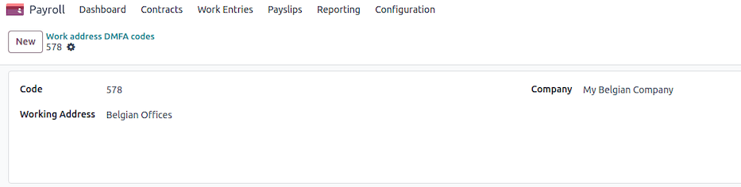Work entry type¶
A DmfA code should be defined for each work entry type that is declared. Under , specify the DMFA code.
Potential configuration errors¶
During the declaration generation process, configuration issues may arise, triggering errors such as:
Terminated employees without or with invalid start/end notice period
Invalid NISS number for some employees
Work addresses not linked to an ONSS identification code
Work entry type missing a corresponding DmfA code
Other inconsistencies in employer or employee records
Employers should ensure accurate configuration to avoid delays and rejection of their declarations.
Web declaration¶
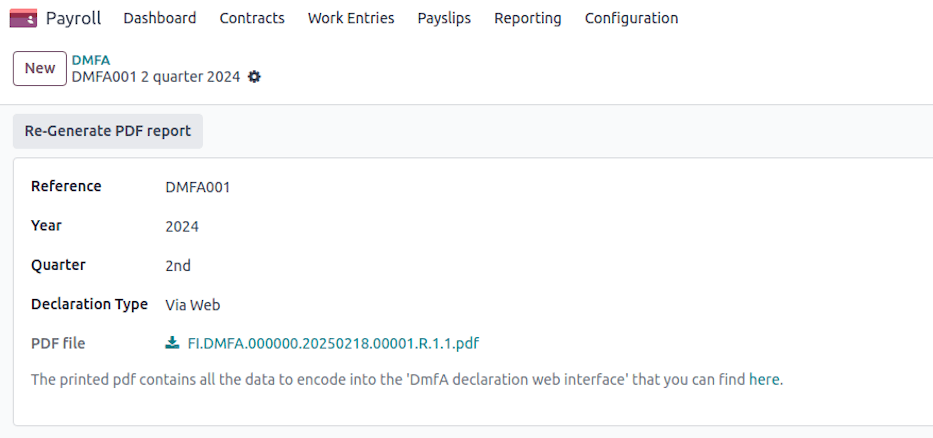A web declaration generates a PDF summarizing the company's general information, as well as all employee data that must be manually entered into the system. This includes:
For the company:
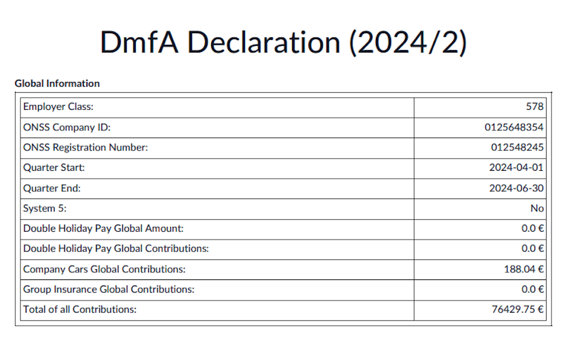For a specific employee:
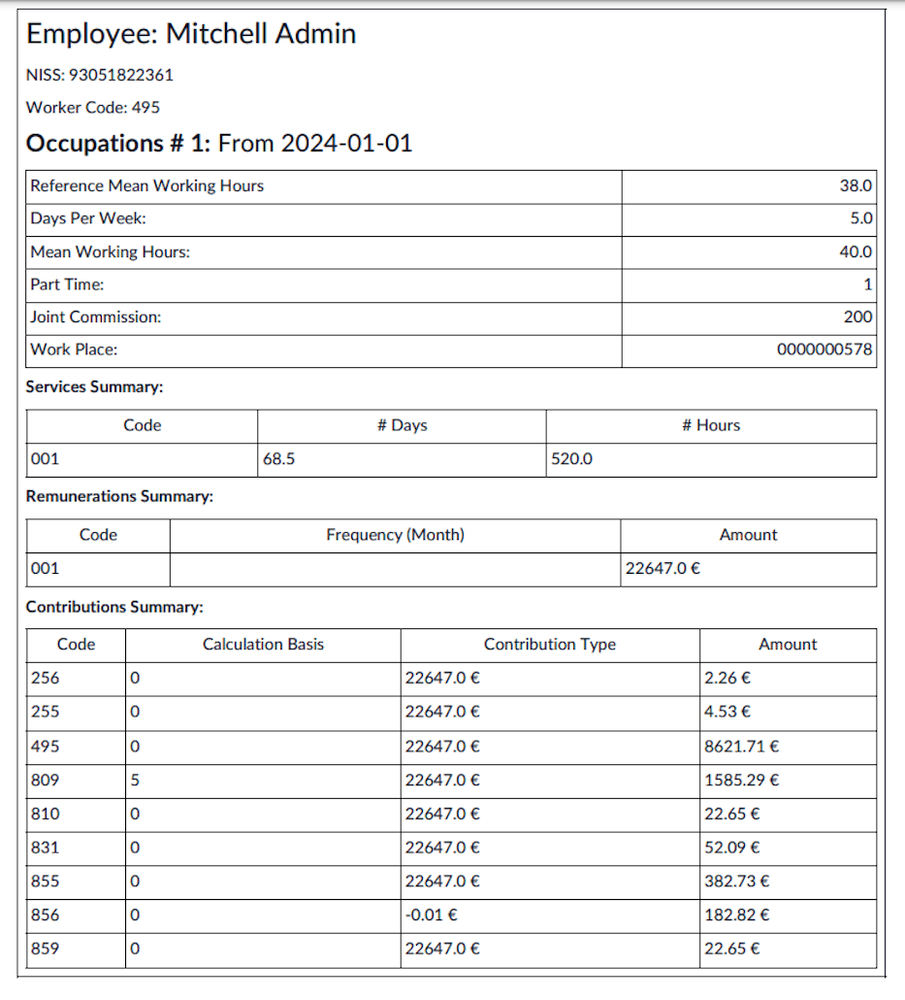Occupations: Work schedules, part-time codes, parental leave, exploitation unit, reference working hours.
Services: Aggregated work performance (in days and hours) for the quarter, categorized by occupation and type. The codification of working time in the DmfA declaration ensures accurate reporting of employee activities. Each code corresponds to a specific type of working time or absence. For a complete and detailed list of codes, please refer to the official social security website: socialsecurity.be
1: All performances covered by a salary subject to ONSS contributions, excluding legal and additional vacation for workers.
2: Legal vacation days for workers.
3: Additional vacation days for workers.
4: Compensatory rest days.
5: Days of illness or non-occupational accident.
6: Family leave days.
7: Maternity or paternity leave days.
8: Strike days.
9: Temporary unemployment for economic reasons.
10: Temporary unemployment for bad weather.
11: Temporary unemployment for force majeure.
12: Professional training days.
13: Suspension for disciplinary reasons.
14: Additional vacation days for employment start or resumption.
15: Flexible vacation days.
Remunerations: Aggregated by code per occupation:
1: Regular salary amounts excluding certain indemnities.
2: Bonuses and similar benefits granted independently of actual working days.
3: Severance payments expressed in working hours.
7: Simple vacation pay for exiting employees (subject to contributions).
10: Personal use of a company vehicle and other mobility benefits.
11: Simple vacation pay for exiting employees (not subject to contributions).
12: Advance vacation pay paid by a previous employer (not subject to contributions).
Contributions: Employer and employee contributions, such as:
256: Asbestos fund contribution.
255: Special work accident contribution.
495: Total employer + 13.07% employee contribution.
809: Enterprise closure fund contribution.
810: Special enterprise closure fund contribution.
831: Auxiliary Joint Committee for Employees (CP200) contribution.
855: Wage restraint contribution.
856: Special social security contribution.
859: Temporary unemployment contribution.
Batch declaration¶
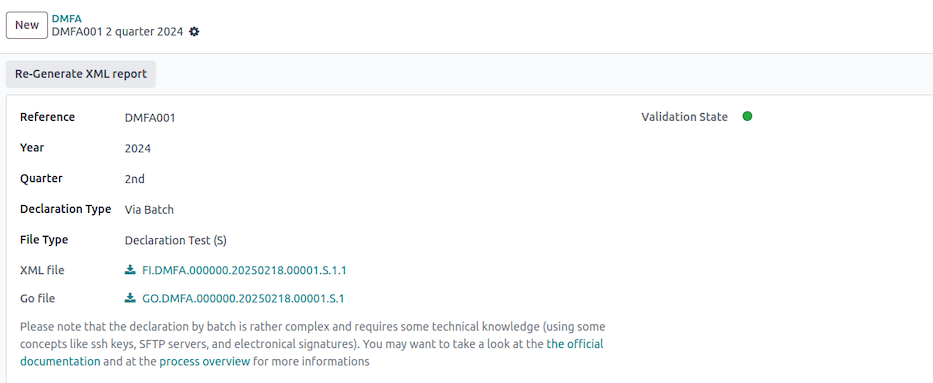Batch declarations require technical knowledge, including SSH keys, SFTP servers, and electronic signatures. Employers should refer to the official batch documentation and process overview.
A batch submission generates three files:
Declaration file (e.g., FI.DMFA.112768.20250109.00014.R.1.1)
Launch file (e.g., GO.DMFA.112768.20250109.00014.R.1)
Electronic signature file (e.g., FS.DMFA.112768.20250109.00014.R.1.1) (only for real declarations, not tests)
The full process includes creating, sending, validating, and potentially correcting declarations. Rejections and anomalies must be addressed before final acceptance.
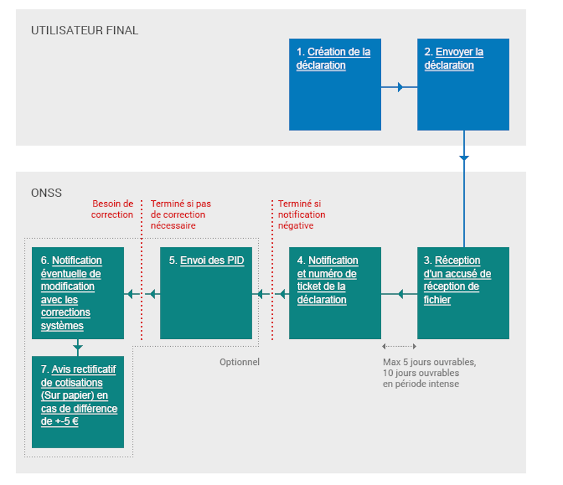Creation of the Declaration
Create an XML document containing employee benefit data, remuneration, and contributions for the company.
More information on XML files can be found in the Specifications page.
Sending the Declaration
Use FTP or SFTP for sending the file. Access requires prior authorization for secure zone access by a local manager.
Detailed instructions are available on the Introduce and Modify (via batch).
File Acknowledgment Receipt
Positive Receipt: Indicates the file can be processed. However, this does not guarantee acceptance.
Negative Receipt: Indicates issues with the file structure or access rights.
Notification and Ticket Number for the Declaration
A positive notification is sent for each accepted declaration.
Negative notification: Provides information on encountered anomalies.
Sending PID
Employers and SSA will receive PID and version numbers via batch for declarations.
Modification Notification with System Corrections
If corrections are made, a modification notification is sent with corrected values.
Double holiday pay¶
Double holiday pay is an additional bonus paid to employees and workers during their annual leave. The amount depends on the employee's or worker's salary.
How is double holiday pay calculated?¶
For employees, double holiday pay amounts to 92% of their gross salary for the month when they take their main annual leave. This amount is calculated based on the number of months worked or considered equivalent in the previous year.
Impact of additional or European leave¶
If you take additional or European leave, your employer will pay you regular holiday pay for that leave. However, the following year, this amount will be deducted from your double holiday pay. This is because additional leave is considered an advance on the next year's legal leave.
Factors affecting the calculation¶
Months Worked: The calculation is based on the number of months you worked in the previous year.
Absences: If you had unpaid absences, they may reduce your double holiday pay.
Variable Revenues: Bonuses and commissions earned in the previous year can impact the total amount of double holiday pay.
Withholding Taxes: The double holiday pay is subject to income tax deductions, which depend on your annual earnings and family situation.
Withholding tax calculation¶
The withholding tax is calculated using a progressive rate system. The process involves:
Identify the Employee's Annual Taxable Revenue:
Compute the annualized salary, including benefits in kind (e.g., company car, internet, mobile phone, laptop).
Apply reductions for dependent children.
Apply Tax Rates:
Use predefined tax brackets to determine the base withholding tax rate.
If applicable, apply a reduction based on the number of dependent children.
Tax brackets¶
The withholding tax is applied progressively based on the following brackets (as of 2025):
Lower Bound |
Upper Bound |
Tax Rate |
|---|---|---|
0.00 |
10,415.00 |
0.00% |
10,415.01 |
13,330.00 |
19.17% |
13,330.01 |
16,960.00 |
21.20% |
16,960.01 |
20,340.00 |
26.25% |
20,340.01 |
23,020.00 |
31.30% |
23,020.01 |
25,710.00 |
34.33% |
25,710.01 |
31,070.00 |
36.34% |
31,070.01 |
33,810.00 |
39.37% |
33,810.01 |
44,770.00 |
42.39% |
44,770.01 |
58,460.00 |
47.44% |
58,460.00 |
∞ |
53.50% |
免税¶
A withholding tax exemption is granted when the normal annual gross income does not exceed a specific threshold, which is determined based on the number of dependent children [2].
A disabled dependent child counts as two.
The method involves referring to a two-column table:
Column 1: Indicates the number of dependent children.
Column 2: Specifies the maximum allowable normal annual gross income, based on the number of dependent children listed in Column 1, which must not be exceeded to qualify for full or partial exemption from withholding tax.
After determining the annual gross income, two scenarios may arise:
If the annual income exceeds the threshold, no exemption is granted.
If the annual income does not exceed the threshold, an exemption will be applied.
The amount of this exemption corresponds to the difference between the annual gross income and the threshold amount.
Of course, if this difference exceeds the base withholding tax amount, no withholding tax will be due.
No. of Children |
Max Revenue (EUR) |
|---|---|
1 |
18,400.00 |
2 |
21,930.00 |
3 |
28,270.00 |
4 |
35,330.00 |
5 |
42,390.00 |
6 |
49,450.00 |
7 |
56,510.00 |
8 |
63,570.00 |
9 |
70,630.00 |
10 |
77,690.00 |
11 |
84,750.00 |
12 |
91,810.00 |
減税¶
When there is no justification for fully or partially exempting the exceptional allowance from withholding tax, it is still possible to grant a reduction in withholding tax.
To determine eligibility for this reduction, one must check whether the normal annual gross salary exceeds a certain higher threshold, which varies according to the number of dependent children [3]. This threshold is higher than the one used for exemption purposes.
A disabled child counts as two.
The method involves referring to a three-column table:
Column 1: Indicates the number of dependent children (up to a maximum of 5).
Column 2: Specifies the percentage reduction in withholding tax, based on the number of dependent children listed in Column 1, which must not be exceeded to qualify for the reduction.
Column 3: Shows the threshold amount that must not be exceeded, corresponding to the number of dependent children listed in Column 1.
Two scenarios may arise:
If the threshold amount is exceeded, no reduction will be granted.
If the threshold amount is not exceeded, a reduction will be applied to the withholding tax amount, up to a percentage rate determined in Column 2.
For employees with dependent children, tax reductions apply as follows:
No. of Children |
Reduction (%) |
Max Revenue |
|---|---|---|
1 |
7.5% |
28,245.00 |
2 |
20.0% |
28,245.00 |
3 |
35.0% |
31,070.00 |
4 |
55.0% |
36,720.00 |
5+ |
75.0% |
39,550.00 |
Final tax calculation¶
The final withholding tax amount is:
The resulting tax is deducted from the gross double holiday salary to determine the net amount payable to the employee.
The calculation considers work duration, absences, variable revenue, and applicable withholding taxes. Odoo automates these calculations to ensure compliance with Belgian labor laws and tax regulations.
Generate a batch in Odoo¶
Navigate to and create a new record with valid dates (here december 2024)
Then click the Generate Payslips button, select the CP200 salary structure type and the Thirteen Month salary structure. You can also filter eligible employees by department and / or job position.
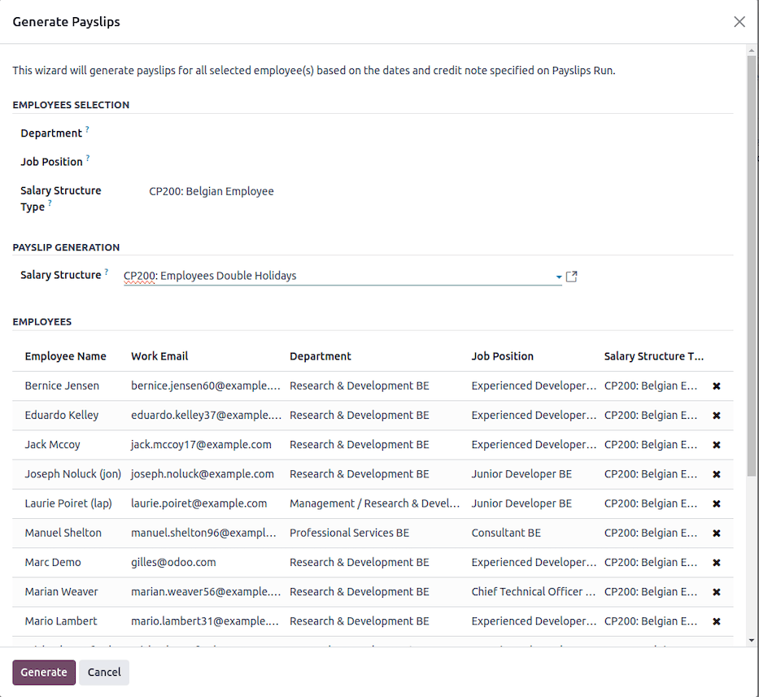Once validated, a payslip is generated for each employee.
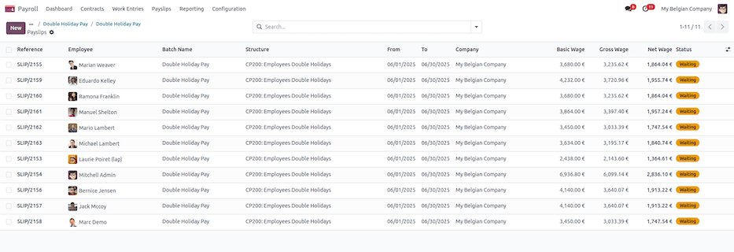You can now check the different payslips before validation. Once validated, the PDF files are generated and posted on employee portals as for classic payslips.
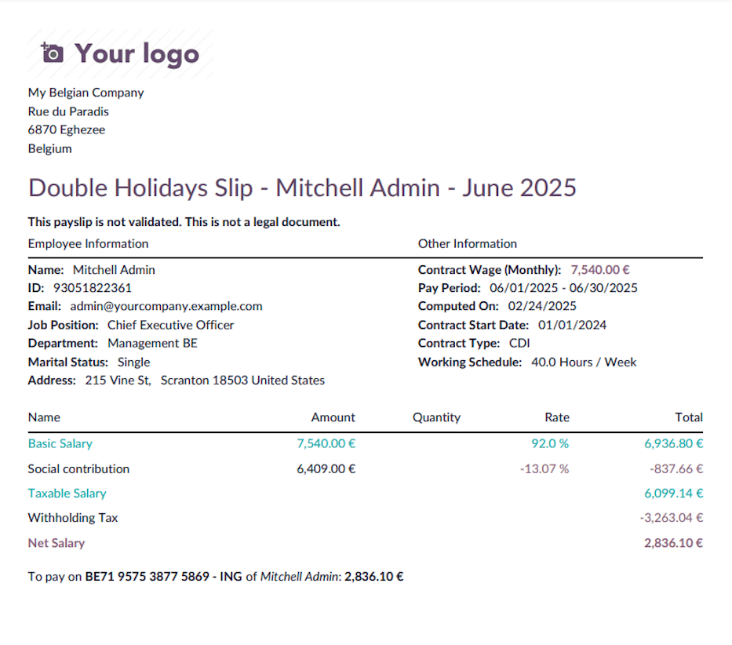結論¶
Double holiday pay is a significant benefit that rewards employees for their work in the previous year. Understanding how it is calculated helps in better financial planning for the holiday period.
Eco vouchers¶
概要¶
Eco vouchers are a tax-free employee benefit designed to support the purchase of environmentally-friendly products and services. These vouchers are ordered via external providers and are exempt from social security contributions.
Eligibility & allocation¶
Employees who have worked during the reference period (01/06/N-1 - 31/05/N) are eligible for up to 250€ in eco vouchers, which are granted at the beginning of July.
Example
For 2025, employees must have worked between 01/06/2024 and 31/05/2025 to qualify.
For employees who join during the reference period, the voucher amount is prorated based on their worked days.
Example
An employee hired on 06/01, having worked 6 out of 12 months, would receive:
For part-time employees, the amount is adjusted as follows:
Work Regime |
Voucher Amount (€) |
|---|---|
4/5 |
250€ |
3/5 |
200€ |
1/2 |
125€ |
< 1/2 |
100€ |
Example
If an employee starts on 1st September in full-time and then switches to half-time on 1st April 2024, the calculation will be:
Exceptions & adjustments¶
If an employee worked full-time for the entire reference period but did not receive 250€, certain non-assimilated leave days may have affected the calculation.
The following leave types are not considered for eco-voucher entitlement:
Unpaid leaves
Sick leave compensated by mutual insurance (after 30 days of work incapacity)
Usage & validity¶
Eco vouchers are valid for 24 months from the date of issuance.
参考
The list of eligible products and services that can be purchased with eco vouchers is available here:
End of year bonus¶
This document explains the calculation of the thirteenth-month salary (year-end bonus) in Belgium within Odoo. The calculation considers the employee's contracts, working time rates, and applicable taxes.
Calculation of the thirteenth-month salary¶
Eligibility criteria¶
The employee must have worked for at least six complete months in the year.
Both full-time and part-time employees are eligible, with prorated calculations based on work time.
Salary calculation¶
The thirteenth-month salary is computed as follows:
Determine the basic salary:
Retrieve the employee's contractual wage.
Identify the applicable work rate.
Compute eligible months:
If explicitly provided (
MONTHSinput), use the given number of months.Otherwise, calculate the number of complete months worked.
Prorate the salary for partial-year work.
Adjust for absences:
Deduct unpaid absences to obtain the presence prorata.
Consider up to 60 days of sick leave as paid time off.
Include variable revenues:
If explicitly provided (
VARIABLEinput), use the given value.Otherwise, calculate the average variable revenue over the last year.
Final amount:
The final thirteenth-month amount is the sum of the prorated fixed salary and average variable revenues.
Withholding tax calculation¶
The withholding tax is calculated using a progressive rate system. The process involves:
Identify the employee's annual taxable revenue:
Compute the annualized salary, including benefits in kind (e.g., company car, internet, mobile phone, laptop).
Apply reductions for dependent children.
Apply Tax Rates:
Use predefined tax brackets to determine the base withholding tax rate.
If applicable, apply a reduction based on the number of dependent children.
Tax brackets¶
The withholding tax is applied progressively based on the following brackets (as of 2025):
Lower Bound |
Upper Bound |
Tax Rate |
|---|---|---|
0.00 |
10,415.00 |
0.00% |
10,415.01 |
13,330.00 |
23.22% |
13,330.01 |
16,960.00 |
25.23% |
16,960.01 |
20,340.00 |
30.28% |
20,340.01 |
23,020.00 |
35.33% |
23,020.01 |
25,710.00 |
38.36% |
25,710.01 |
31,070.00 |
40.38% |
31,070.01 |
33,810.00 |
43.41% |
33,810.01 |
44,770.00 |
46.44% |
44,770.01 |
58,460.00 |
51.48% |
58,460.00 |
∞ |
53.50% |
免税¶
A withholding tax exemption is granted when the normal annual gross income does not exceed a specific threshold, which is determined based on the number of dependent children [2].
A disabled dependent child counts as two.
The method involves referring to a two-column table:
Column 1: Indicates the number of dependent children.
Column 2: Specifies the maximum allowable normal annual gross income, based on the number of dependent children listed in Column 1, which must not be exceeded to qualify for full or partial exemption from withholding tax.
After determining the annual gross income, two scenarios may arise:
If the annual income exceeds the threshold, no exemption is granted.
If the annual income does not exceed the threshold, an exemption will be applied.
The amount of this exemption corresponds to the difference between the annual gross income and the threshold amount.
Of course, if this difference exceeds the base withholding tax amount, no withholding tax will be due.
No. of Children |
Max Revenue (EUR) |
|---|---|
1 |
18,400.00 |
2 |
21,930.00 |
3 |
28,270.00 |
4 |
35,330.00 |
5 |
42,390.00 |
6 |
49,450.00 |
7 |
56,510.00 |
8 |
63,570.00 |
9 |
70,630.00 |
10 |
77,690.00 |
11 |
84,750.00 |
12 |
91,810.00 |
減税¶
When there is no justification for fully or partially exempting the exceptional allowance from withholding tax, it is still possible to grant a reduction in withholding tax.
To determine eligibility for this reduction, one must check whether the normal annual gross salary exceeds a certain higher threshold, which varies according to the number of dependent children [3]. This threshold is higher than the one used for exemption purposes.
A disabled child counts as two.
The method involves referring to a three-column table:
Column 1: Indicates the number of dependent children (up to a maximum of 5).
Column 2: Specifies the percentage reduction in withholding tax, based on the number of dependent children listed in Column 1, which must not be exceeded to qualify for the reduction.
Column 3: Shows the threshold amount that must not be exceeded, corresponding to the number of dependent children listed in Column 1.
Two scenarios may arise:
If the threshold amount is exceeded, no reduction will be granted.
If the threshold amount is not exceeded, a reduction will be applied to the withholding tax amount, up to a percentage rate determined in Column 2.
For employees with dependent children, tax reductions apply as follows:
No. of Children |
Reduction (%) |
Max Revenue |
|---|---|---|
1 |
7.5% |
28,245.00 |
2 |
20.0% |
28,245.00 |
3 |
35.0% |
31,070.00 |
4 |
55.0% |
36,720.00 |
5+ |
75.0% |
39,550.00 |
Final tax calculation¶
The final withholding tax amount is:
The resulting tax is deducted from the gross thirteenth-month salary to determine the net amount payable to the employee.
The calculation considers work duration, absences, variable revenue, and applicable withholding taxes. Odoo automates these calculations to ensure compliance with Belgian labor laws and tax regulations.
How to do it in Odoo¶
Navigate to and create a new record with valid dates (here december 2024).
Then click the Generate Payslips button, select the CP200: Belgian Employee Salary Structure Type and the CP200: Employees 13th Month Salary Structure. You can also filter eligible employees by Department and / or Job Position.
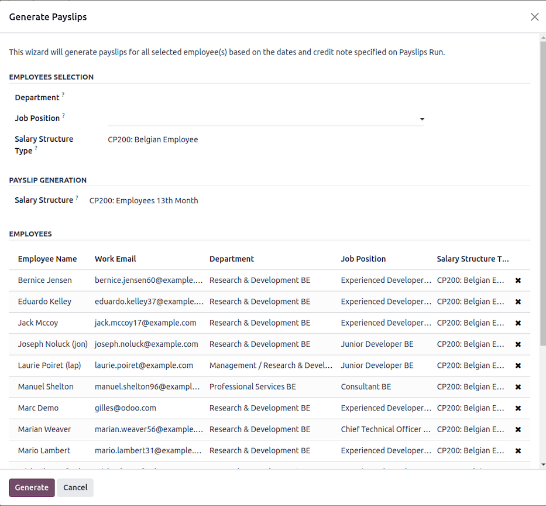Once validated, a payslip is generated for each employee.
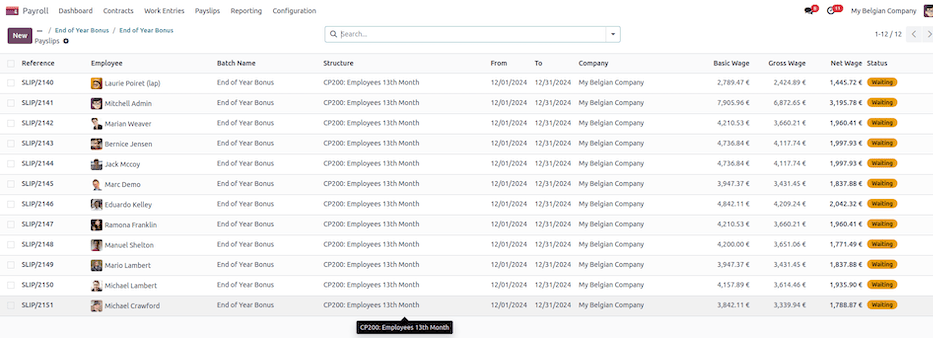You can now check the different payslips before validation. Once validated, the PDF files are generated and posted on employee portals as for classic payslips.
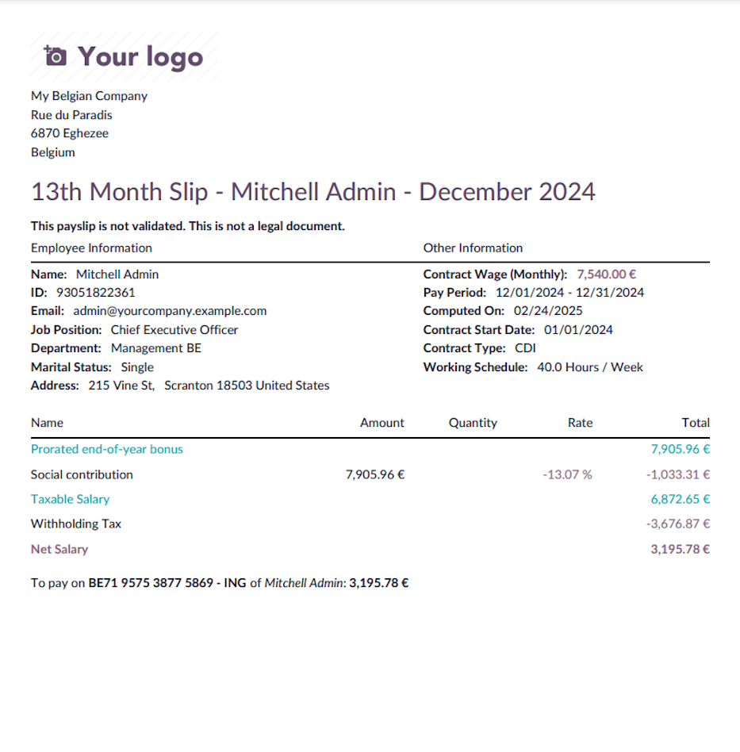Holiday pay recovery¶
This document explains how Odoo calculates the recovery of holiday pay (both simple and double) for employees in Belgium who have changed employers. When an employee moves from one company to another, their previous employer may have already paid their holiday pay for the previous year. This amount needs to be recovered by the new employer, and this guide outlines how this is managed in Odoo.
Understanding holiday pay in Belgium¶
In Belgium, employees are entitled to annual leave and corresponding holiday pay, which consists of:
Simple holiday pay: Regular salary payments for the days of leave taken.
Double holiday pay: An additional payment, typically equal to approximately 92% of the gross monthly salary, given when employees take their annual leave.
When an employee changes jobs, their previous employer may have already paid these amounts. To avoid double payment, the new employer needs to recover the amounts already paid.
Recovery of simple holiday pay¶
The recovery of simple holiday pay in Odoo is based on the following criteria:
The recovery applies if the employee has taken leave in the current year and their previous employer already paid the holiday pay.
The calculation considers the number of leave days taken and the hours worked per week.
The recovery process is split into:
Year N: The current year's holiday pay recovery.
Year N-1: The recovery of holiday pay from the previous year.
The system checks:
If the employee's first contract date with the company was in the previous year.
If the employee has a pending holiday pay recovery amount.
If the recovery has not already been processed.
If the employee has taken annual leave.
If all conditions are met, Odoo calculates the amount to be deducted from the payroll to account for the holiday pay already received from the previous employer.
Recovery of double holiday pay¶
The recovery of double holiday pay follows these steps:
The system verifies the employee's contract and determines their employment duration.
The gross salary is calculated based on the employee's contract.
The number of months worked in the previous year is identified.
A threshold amount is computed as follows:
\[\text{Threshold} = \text{Current monthly salary} \times \text{Months worked in previous year} \times \text{Occupation rate} \times 7.67%\]If the amount on the holiday certificate from the previous employer is lower than this threshold, no limit applies.
The system recovers the lower of:
The calculated threshold.
The actual amount paid by the previous employer.
If the employee has worked for more than 12 months in the current company, no double holiday pay needs to be recovered.
How to configure in Odoo¶
In the employee form view, under the Settings tab, you can enter the various amounts from holiday attests provided by the new employee.
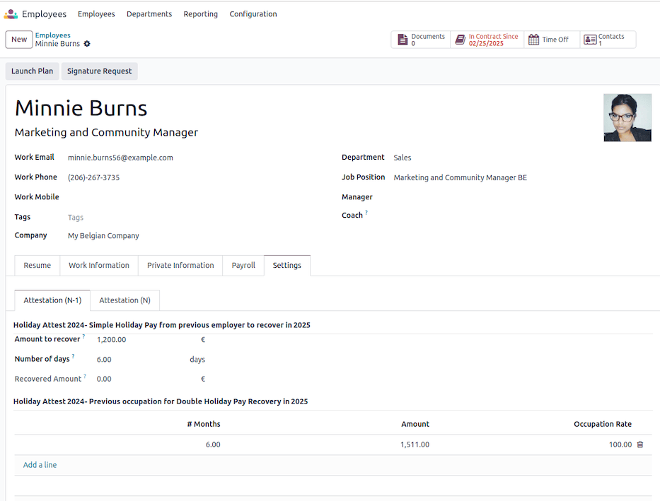For simple holiday pay recovery, you need to enter:
The Number of days for paid leave
The Amount to recover by the employee
注釈
The Recovered Amount field displays the amount already recovered.
For double holiday pay recovery, you must enter a line for each employer's holiday attest. Each line should include:
The # Months (number of months) the employee worked for that employer
The Amount provided to the employee
The Occupational Rate
Odoo uses this data to compute a recovery limit. If the employee now has a lower salary, the full amount cannot be recovered.
ちなみに
Be careful not to mix holiday attests for the current year (N) and the previous year (N-1).
For simple holiday pay recovery, the system deducts the amount from each legal time-off period until:
The total amount has been fully recovered, or
The number of time-off days has been matched (if the employee's current salary is lower than before).
Once the payslip is validated and paid, the recovered simple holiday pay is reflected in the employee form view.
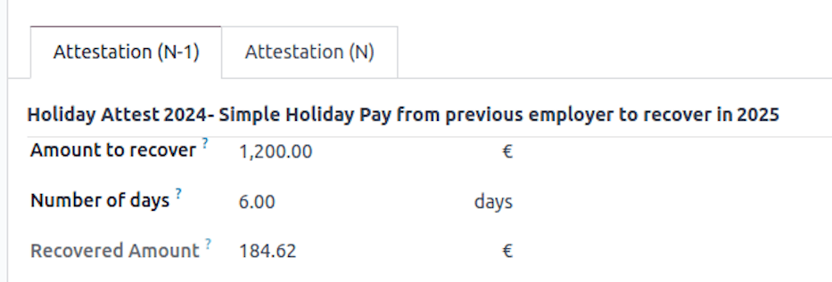On the double holiday payslip, click Compute Double Pay Recovery to open a wizard that helps calculate the recoverable amount.
In the Double Pay Recovery Computation wizard, you'll find:
The relevant holiday attests listed in the Occupation Lines
The Double Pay To Recover amount based on the threshold
This amount is editable if manual adjustments are needed.
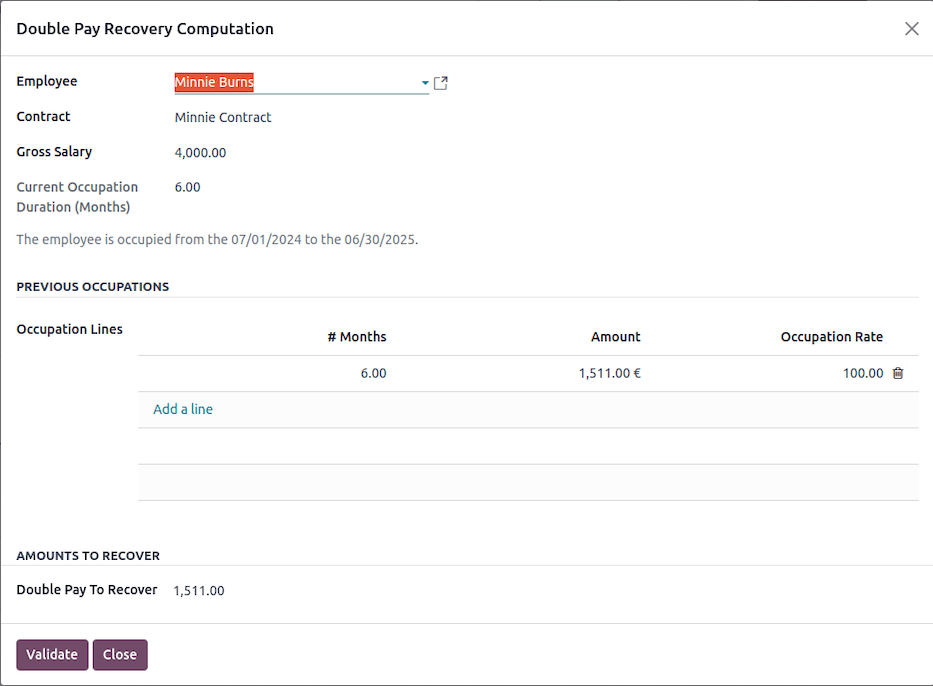Once validated, the double pay recovery is applied to the payslip.
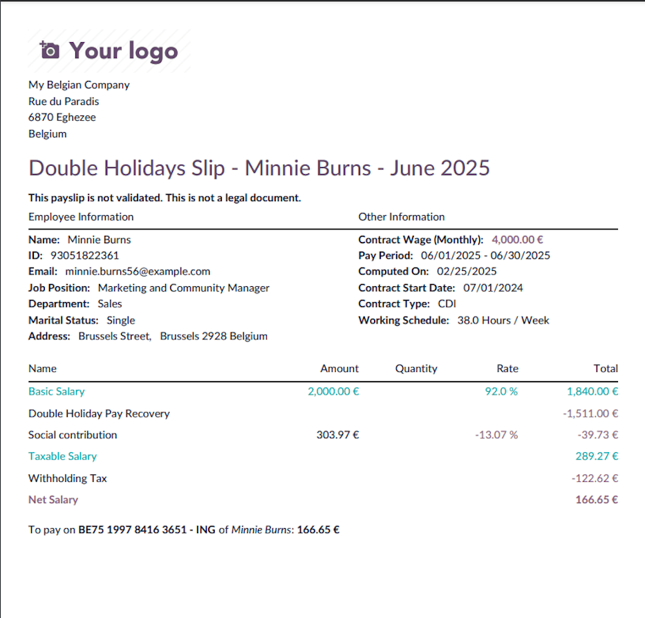Odoo automates the recovery of both simple and double holiday pay, ensuring compliance with Belgian labor laws. By analyzing contract details, employment duration, and past payments, Odoo calculates the necessary deductions and prevents duplicate holiday pay payments.
Individual accounts¶
入門¶
The individual account provides workers with a detailed overview of their earnings, deductions (such as social security contributions, withholding tax, etc.), and the working days performed, on a pay period basis. Additionally, it contains all relevant administrative data related to remuneration.
Required information in the individual account¶
The individual account must include several mandatory details as determined by Royal Decree.
Employer identification:
Name, address, ONSS number, ONVA number
Relevant joint committee (or sub-committee)
Name of the holiday fund for workers
Insurer for work-related accidents
Approved social secretariat
Relevant affiliation numbers
Worker identification:
Name, address, date of birth, gender, tax status
Type of employment contract, job title, professional qualification
Workplace location (or note if working at multiple locations)
Start and end date of employment
Employee ID number, starting salary
Remuneration components and payment periodicity
Remuneration components:
Per pay period (daily, weekly, bi-weekly, or monthly):
Number of working days and hours (regular, additional, and overtime)
Days of work interruption and reasons (illness, vacations, public holidays, replacement days, compensatory rest days, etc.)
Fixed or hourly salary, variable remuneration, bonuses, meal vouchers, eco vouchers, holiday pay (including early holiday pay if applicable), severance pay, year-end bonuses (as per sectoral or other collective labor agreements), benefits in kind and their estimated value
Gross amount of all remuneration components
Amounts subject to social and tax deductions
Various social and tax deductions: personal ONSS contributions, withholding tax, special social security contributions
Net amount payable to the worker
Other payments made by the employer, including reimbursement of travel expenses, allowances, and other payments
Per quarter:
Number of actual working days
Days of work interruption by reason
Total remuneration subject to social security contributions
Employee social security contribution amounts
Per year:
Total amounts subject to social security contributions
Employee social security contribution amounts
Taxable remuneration and other amounts
Withholding tax amount
Responsibility for establishing and updating the individual account¶
Belgian employers using Odoo Payroll can generate the individual accounts of their workers.
However, to ensure accurate record-keeping, employers must:
Ensure payment of sector-mandated year-end bonuses
Ensure that all public holidays, legal vacation days, and compensatory rest days are taken before the end of the year
Plan collective vacation and replacement public holidays in advance
Pay workers their holiday pay (including early holiday pay if applicable)
Distribute due eco vouchers
Pay any required travel expenses between home and work
If these obligations are met, the corresponding data will be included in the individual account.
Storage and retention period of the individual account¶
The individual account is a social document that must be kept by the employer for a specified period after its creation.
Employers may store individual accounts:
At the ONSS-registered address
At a workplace
At their home or registered office if located in Belgium; otherwise, at the residence of a designated agent in Belgium
At the office of the approved social secretariat, if affiliated
Records must be kept legible and in a format allowing efficient oversight. The retention period is five years from the end of the annual closing of the account.
When must workers receive a copy of their individual account?¶
Each worker must receive a copy of their individual account:
During employment: Before March 1 of the following year
At the end of employment: Within two months following the end of the quarter in which the contract ended
If additional payments occur after contract termination: A copy reflecting the additional payment must be provided within two months of the payment
Additionally, employers must issue a simplified individual account with certain worker and employer details within two months of the worker's employment start date.
Any modifications to mandatory details, such as job function or workplace location, must be communicated in writing (e.g., an updated simplified individual account) within one month of the effective change date.
Generate individual accounts in Odoo¶
Navigate to .
Then select the reference year and click the Populate button. The .pdf are
displayed as soon as they are available and are generated 30 by 30, this could take some time
according to the number of employees.
On the first page, the Employer Information and the Employee Information is listed.
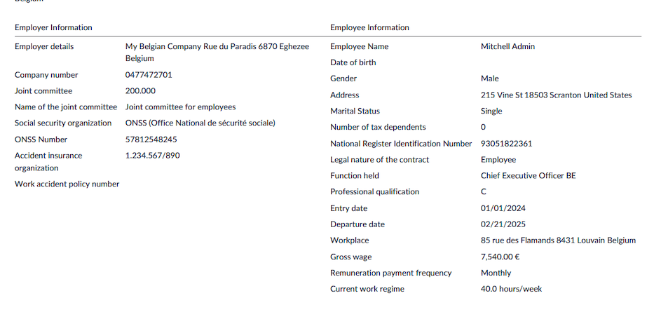The next page displays all the employee worked days and payslip lines, month by month, split by structure (e.g., End of year bonus and monthly pay).
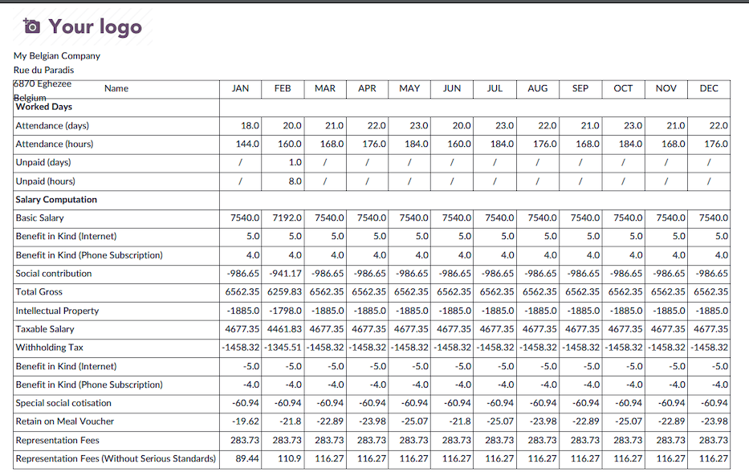The next page displays the same information quarter by quarter and summarized for the whole year.
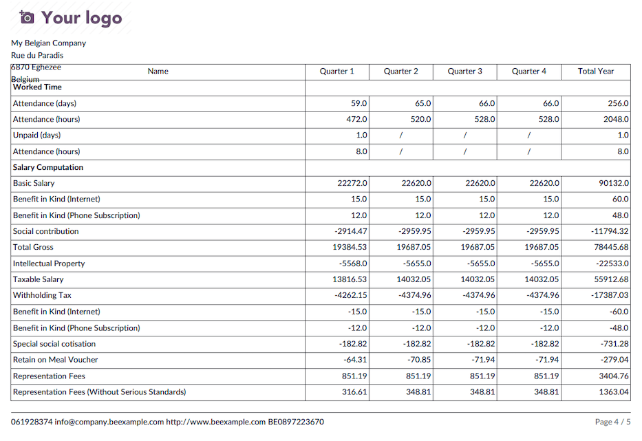Once all PDF files are generated, they can be posted to the employee documents portal if the Documents application is installed and properly configured.
Select the checkbox of each employee whose documents you want to post, and click the Post PDF button.
Intellectual property and 273 sheets¶
入門¶
The 273S declaration is used for the Prepayment on Mobile Income (Pr.M), which concerns the taxation of Author's Rights and Neighboring Rights (also known as Revenus Mobilier). These are specific types of income that are subject to particular tax treatment in certain jurisdictions.
This document provides users with essential information about how the 273S declaration functions within Odoo for reporting income derived from these rights, including applicable tax rates and conditions.
Tax rates and calculation¶
The net income from Author's Rights and Neighboring Rights is taxable at a specific rate of 15%. However, the effective tax rate can vary based on the application of flat-rate deductions. These flat rates reduce the taxable amount, leading to a lower effective tax rate for lower incomes.
Key points of taxation:
Effective tax rate:
For incomes below the first flat-rate threshold, the effective tax rate can be as low as 7.5%.
For incomes reaching the flat-rate ceiling of 37,500 EUR (indexed annually), the rate can increase to 12%.
Additional taxes: Income from Author's Rights and Neighboring Rights must be declared in the personal income tax declaration. As a result, municipal surcharges may also apply to the tax due.
The prepayment of the tax is handled via a withholding tax on the income. The debtor of the income (e.g., the employer or company paying the royalties) must submit the 273S declaration to the tax authorities. This withholding tax rate is generally 15%, but for incomes exceeding the indexed ceiling of 37,500 EUR, the rate increases to 30%.
Odoo integration for Declaration 273S¶
Odoo users can efficiently manage the submission of the 273S Declaration for Author's Rights and Neighboring Rights income via the Odoo Payroll module. Here's a quick overview of how this can be done:
Generate the 273S form¶
Odoo can generate the 273S form automatically based on the income data entered into the system. Ensure that all required details, including the amount of income subject to the tax, are accurately entered.
Navigate to to create a New record.
Select the reference Year and Month, then click Export XML file to generate the declaration. Click Export PDF File to generate the printed details.
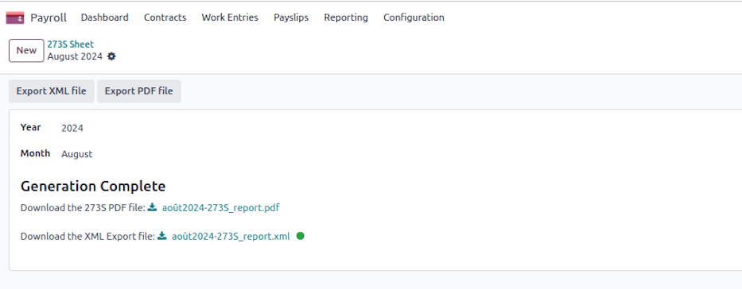On the first PDF section, the company information and the global declaration is listed.
On the second section, the employees specific information is listed.
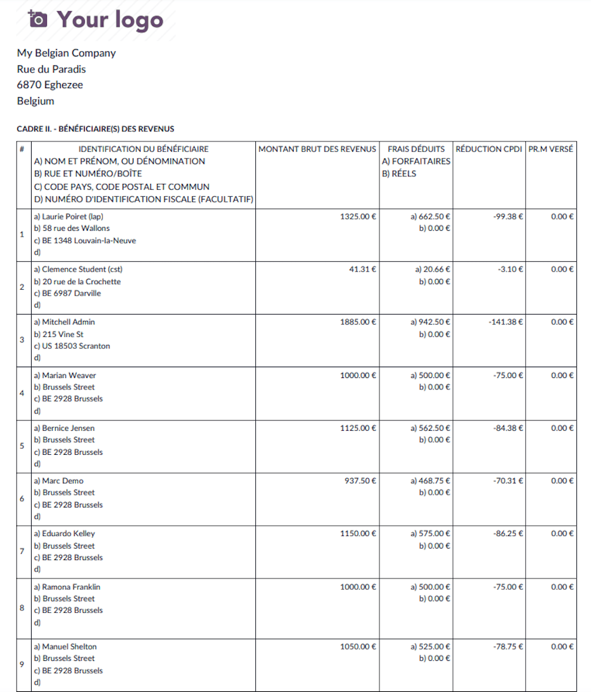File the 273S Declaration¶
After generating the XML file, the company or the debtor of the income can submit it to the tax authorities directly from MyMinfin. Keep track of the filing and payment deadlines to ensure timely submission and compliance.
結論¶
The 273S Declaration is an essential tool for companies and individuals benefiting from the favorable tax regime on Author's Rights and Neighboring Rights. By leveraging Odoo's tax management features, users can ensure compliance while optimizing their tax liabilities.
For further assistance, please consult a tax professional.
Representation fees¶
入門¶
Representation fees must be allocated on the payslip between serious and non-serious representation costs. By default, the threshold is set at €283.73, but it can be adjusted based on what the company can legally justify.
The representation fees is configured on the employee's contract form in the Expense Fees field.
On the payslip, two or one line are displayed in the case the representation fees amount exceeds the threshold or not.
Breakdown of the threshold¶
Only part of the representation costs are pro-rated because certain costs are fully covered by the company. These fixed costs include:
The serious portion of the representation costs is not prorated, while the non-serious portion is prorated based on working time.
Navigate to , and
search for the CP200: Representation Fees Threshold record. Then, adapt the current value or
introduce a new one from a given date.
注釈
It is possible to define, based on job position, which jobs are eligible to certain criteria in the Payroll tab.
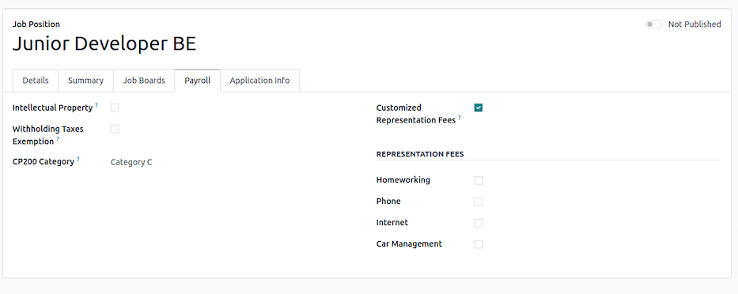Calculation of representation fees¶
Conditions for payment¶
Representation fees are only granted if:
The employee receives a basic salary, and
The employee has worked at least part of the time, unless a salary simulation is in progress.
If the employee is on full leave (without any working days), they are not eligible for representation fees.
Determining the work time rate¶
The number of working days per week is extracted from the employee's contract.
If the employee has periods of incapacity for work (e.g., illness), the calculation adjusts the work time rate accordingly:
The total incapacity hours are determined.
If the company follows a biweekly schedule, the incapacity hours are divided by two.
The incapacity rate is calculated as:
\[\text{incapacity rate} = 1 - \frac{\text{incapacity hours}}{\text{total weekly hours}}\]The final work time rate is then adjusted by multiplying it with the incapacity rate.
Applying the threshold and pro-rating rules¶
The default threshold (€283.73) is applied unless adjusted by the company.
If the employee has worked a full-time schedule, they receive the full representation fees without reduction.
If the employee works part-time (contractual or due to time credit), only the non-serious portion of the fees is prorated.
The prorated formula for non-serious expenses is:
\[\text{adjusted amount} = \text{threshold} + (\text{total fees} - \text{threshold}) \times \frac{\text{work time rate}}{100}\]
If the employee has missing workdays, the final amount is further adjusted:
First calculate the daily reduction:
\[\text{daily reduction} = \frac{(\text{total amount} - \text{threshold}) \times 3}{13 \times \text{days per week}}\]Then calculate the final amount:
\[\text{final amount} = max(0, \text{total amount} - \text{daily reduction} \times \text{missing days})\]
Final calculation¶
If the employee meets all conditions, the final representation fees amount is rounded to two decimal places for payroll purposes.
Employees working a full schedule receive full reimbursement, while those working reduced hours have the non-serious portion prorated accordingly.
結論¶
This calculation ensures fair allocation of representation fees by distinguishing between fixed serious costs and prorated non-serious costs. The company can adjust the threshold (€283.73 by default) based on justifiable business expenses.
Employees working full-time receive their full representation fees, while those working part-time or with absences only receive a pro-rated portion of the non-serious fees.
Sick time off and relapse¶
In Belgium, sick leave is managed according to two main regimes:
With guaranteed salary: The employer continues to pay the worker's salary for a specified period.
Without guaranteed salary: The worker receives benefits from the mutual insurance company after the guaranteed salary period.
Sick leave with guaranteed salary¶
The guaranteed salary is a period during which the employer continues to pay the salary of the worker who is unable to work.
Employees: The employer pays 100% of the salary during the first full month of incapacity. After this period, if the incapacity continues, the worker falls under the mutual insurance regime.
Sick leave without guaranteed salary¶
After the guaranteed salary period, the ONEM (National Employment Office) or the mutual insurance company takes over.
Long-term illness: An incapacity lasting more than 30 days leads to benefits from the mutual insurance company.
Relapse: If a worker returns to work and then becomes ill again for the same reason within 14 days, this may be considered a relapse, and the rules for guaranteed salary may be adjusted.
Management in Odoo¶
In Odoo, sick leave is automatically managed if the absences are related to the Sick Time Off work entry type.
Recording time off: The employee records their absence through the Time Off module.
Automation of work entries: If the request is approved, Odoo automatically generates the corresponding Work Entries.
Impact on payroll: The guaranteed salary is automatically calculated according to the rules configured based on the worker's status (employee).
Compensation after the guaranteed salary: Once the guaranteed salary period has expired, Odoo adjusts the Work Entries to reflect the transition to the mutual insurance company.
Thus, Odoo ensures a smooth and compliant management of sick leave according to Belgian regulations.
入門¶
The Social Balance Sheet was introduced by the law of December 22, 1995, as part of measures for the implementation of the multi-year employment plan. Companies required to file annual accounts (including some that are not obligated to publish such accounts - see the National Bank of Belgium website for details) must also prepare and submit a Social Balance Sheet to the National Bank of Belgium.
The Royal Decree of August 4, 1996, incorporates the Social Balance Sheet into the annual accounts, specifically as an annex. This makes it an integral part of a company's financial statements.
Obligations by entity type¶
Exporting the report¶
Once the selections are made, you can export the report in different formats:
Click Export to PDF to generate a printable version of the Social Security certificate.
Click Export to XLSX to generate an Excel file containing all relevant data.
This feature ensures full transparency and compliance with social security regulations in Belgium.
休暇¶
Legal time off¶
This guide provides an overview of the basic rules governing legal holiday entitlements in Belgium for employers using Odoo.
Holiday entitlement calculation¶
Your holiday entitlement for the current year (N) is determined by the number of months worked in Belgium during the previous year (N-1).
Calculation details:
Employees earn 2 days of leave per month based on a 6-day work week.
The entitlement is adjusted for a 5-day work week: \((\text{Total Days} \div 6) \times 5\).
Example
If an employee worked 7 months in the previous year (N-1):
6-day work week: \(7 \times 2 = 14 \text{ days}\)
5-day work week: \(14 \div 6 \times 5 = 11.67 \text{ days}\)
Partial Month Calculation:
Worked 1st to 10th: Full month counted.
Worked 11th to 19th: Half month counted.
Worked 20th onwards: Month not counted.
Rounding Rules:
Less than 0.35: Round to 0.
Between 0.35 - 0.74: Round to 0.5.
0.75 and above: Round to 1.
For a full-time employee, this typically results in 11.5 days of legal holiday entitlement.
Maximum holiday entitlement¶
Employees are entitled to a maximum of 4 weeks of holiday based on their working schedule. If an employee switches between full-time and part-time work, their entitlement is adjusted accordingly.
Calculation details:
5-day work week: \(4 \times 5 = 20 \text{ days}\)
4-day work week: \(4 \times 4 = 16 \text{ days}\)
3-day work week: \(4 \times 3 = 12 \text{ days}\)
Example
If an employee joined Odoo on January 1, 2024, and plans to switch to a 3-day work week from April 1, 2024:
Step 1: Calculate holiday entitlement for 2024
The employee worked 9 months in 2023.
6-day work week basis: \(9 \times 2 = 18 \text{ days}\)
Adjusted for 5-day work week: \(18 \div 6 \times 5 = 15 \text{ days}\)
Step 2: Verify maximum holiday entitlement
For a 5-day work week, the maximum entitlement is 20 days.
Since the employee is entitled to 15 days, they remain within the limit.
Step 3: Adjust entitlement for the new work schedule
From April 1, 2024, the employee moves to a 3-day work week.
Maximum entitlement for a 3-day work week: \(3 \times 4 = 12 \text{ days}\).
If no leave is taken before April 1, the employee may take up to 12 days from their 15-day entitlement.
The remaining 3 days will be settled at the end of the year.
This ensures compliance with Belgian legal leave regulations and allows employers to manage holiday entitlements effectively within Odoo.
Legal time off allocation¶
This is possible to generate the legal time off for all your employees at the beginning of a new year using the wizard in .
Based on your employees occupation over last year, the number of available time off is pre-computed for each employee.
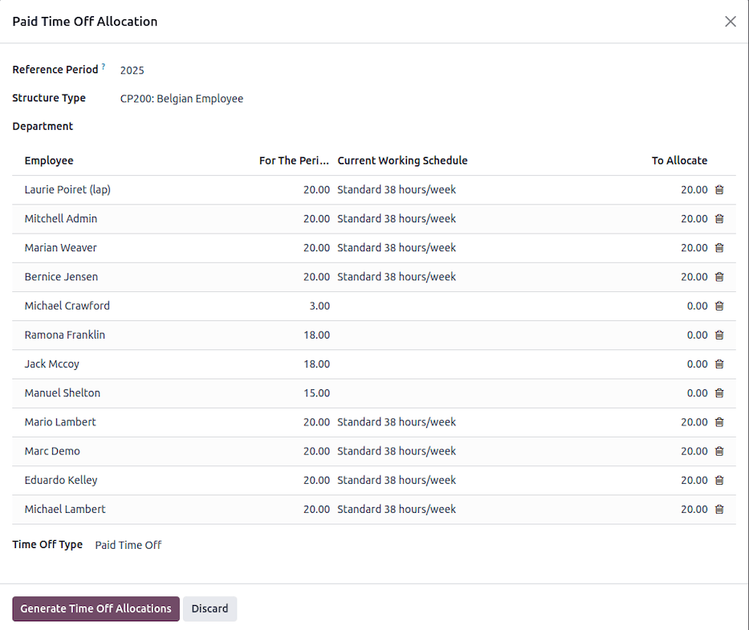Once validated, a draft allocation is generated for each single employee, waiting a manual confirmation that can be done in batch.
European time off¶
どのように機能しますか？¶
If you were not subject to Belgian ONSS contributions before joining our company and do not have entitlement to legal holidays, or if your entitlement is incomplete, you can apply for European leave.
To qualify for European leave in a given year, you must work for at least 3 months during that year, whether with us or another employer. Once you have met this requirement, you will earn 5 days of European leave. Subsequently, you will accumulate additional days of vacation each month as follows:
After 3 months: 5 days
After 4 months: 7 days
After 5 months: 9 days
After 6 months: 10 days
After 7 months: 12 days
After 8 months: 14 days
After 9 months: 15 days
After 10 months: 17 days
After 11 months: 19 days
重要
The total of legal leave and European leave cannot exceed 20 days per year. You must use all your legal holidays before taking European leave.
European leave entitlement expires on December 31st of the year it is earned and cannot be carried over to the following year. To qualify for European leave in a new year, you must complete another 3 months of work.
How are these days paid?¶
European leaves are paid holidays taken in advance of your "Double Holiday Pay" (the June extra pay) for the following year. Essentially, the more European leave days you take in a given year, the less you will receive as June extra pay in the following year.
Working schedule change¶
This guide explains how to modify an employee's working time schedule in the Belgian payroll module of Odoo. Changing an employee's working hours affects their wage calculation, time-off allocation, and contract terms.
Steps to change an employee's working schedule¶
Navigate to the employee's contract (), and select the contract of the employee whose working schedule you want to modify.
Click on (Action) and select Working Schedule Change. The wizard displays the current contract details and allows you to set new working time parameters.
Set the new working schedule:
Choose the new Working Schedule from the available resource calendars.
Define the Start Date for the change (mandatory).
If applicable, specify an End Date.
If the Part Time checkbox is selected, any difference between the reference calendar and the employee's new calendar will be covered using the Absence Work Entry Type. This ensures that the employee's monthly salary remains the same, regardless of the number of absence days in a given month. This setup is required for configuring Time Credit, Parental Leave, or Medical Half-Time correctly.
Adjust the employee's wage:
The wizard automatically computes the full-time equivalent wage based on the new working schedule.
You can review and modify the new wage if necessary.
Manage time off allocation:
Select the relevant Time Off Type.
Odoo automatically adjusts the employee's time-off entitlement based on the new working schedule using the following formula:
\[\text{New Time Off Allocation} = \max(\min(\text{ Computed Allocation}, \text{ Max Allocation}) + \text{ Leaves Taken}, \text{ Leaves Taken})\]Computed Allocation is the expected leave allocation based on the new schedule.
Max Allocation is the maximum number of days allowed under the new working time.
Leaves Taken ensures the employee does not receive fewer days than already used.
Decide on a follow-up contract
If the working time change is temporary, you can enable Post Change Contract Creation to automatically create a contract that resumes the previous working schedule after the specified end date.
Validate the changes
Click Validate to apply the new working schedule.
If the new schedule is the same as the current one, an error will be displayed.
The system will create a new contract with the updated working time and wage.
If a previous contract existed, it will be closed with an end date before the new contract begins.
結果¶
The employee's new working schedule is recorded.
Wage and time-off entitlements are adjusted accordingly.
A follow-up contract is created if applicable.
Work entries exports¶
What are work entries?¶
In the context of payroll, work entries typically refer to records or documentation related to an employee's work hours and earnings for a specific pay period. These entries are crucial for accurately calculating and processing employee compensation.
Work entries in the context of payroll are essential for both employees and employers. They provide a transparent and accurate record of an employee's compensation and deductions, ensuring that employees are paid correctly and that tax and legal requirements are met. Payroll software and systems are commonly used to manage and automate these work entries, making the payroll process more efficient and accurate.
Main concepts¶
一般¶
In Odoo, work entries mainly refer to time entries (attendance tracking), these are work entries that consist of time records, which include the number of hours worked by an employee during a given pay period. These entries may specify regular working hours, overtime hours, and any other relevant time-related information, such as breaks, paid time off, unpaid time off, parental leave, credit-time, etc.
Work entries serve a dual role in payroll management. First, they enable organizations to independently compute employee payslips. Second, they facilitate the transmission of pertinent data to external payroll service providers, who then use this information to calculate and generate the payslips.
Work entries¶
They have a Name: used to identify the type of entry (e.g., Attendance, Paid Time Off, etc.).
They have a Payroll Code: used in Odoo's salary rules computations
They have an External Code: used to provide the correct Work Entry code to an external payroll service provider.
They are generated based on the configuration of the contract and the time off types
They have a duration, a start and end date, a state and are always linked to an employee.
Work entry types¶
They are the main source of configuration for your work entries. Thanks to your different types of work entries, you'll be able to differentiate the time records of your employees.
They have a name.
They contain a code, external code, payroll code and a color for visual tracking.
They allow other types of configurations such as how they are displayed in payslips, decide whether this type of work entry should be considered as paid or unpaid (eg. unpaid leave), decide whether this type of work entry has a link with time off, is valid for some advantages or how it should be reflected in your reporting.
Time off types¶
As mentioned above, since work entry types can be linked to a time off type, you are also able to define the work entry type for each time-off type. On the time off type you have a many2one relation with the work entry type.
Steps to generate the work entries of your staff¶
Create all the employees
Create a contract and set its status to Running for each employee.
In the contract, choose the Work Entry Source. It tells the system how work entries for an employee should be generated. It can be based on:
Working Schedule: Odoo uses the predefined working hours and days set in the employee's working schedule to generate work entries. This is useful for regular, predictable shifts.
Attendances: Work entries are generated from the employee's attendance records (i.e., when they check-in and check-out).
Planning: Work entries are created based on the validated shifts or slots allocated to the employee in the Planning app (often used for scheduling roles like retail shifts, restaurants, etc.).
Generate the work entries each month
Odoo automatically creates the work entries in the Payroll app based on the work entry source of the contract and the different time-offs taken. You can edit the work entries manually. You can always decide to regenerate work entries manually but be careful if you already made some manual changes, Odoo will regenerate the work entries based on what it knows (e.g., your working schedule and time off).
Managing conflicts
Conflicts are pointing to entries that can't be validated without your intervention. This means you'll have to qualify the entry and decide which is the correct entry to be defined for the time period if you want to be able to generate the payslip or validate the entries. Conflicts arise when there are overlapping entries or when Odoo detects that there is a time off request still pending for validation. For instance, if an employee is marked as attending work and at the same time there's a paid leave request to be validated for the same period, that's a conflict.
Conflicts can be managed by filtering on the conflicting entries and resolving the discrepancy. Since Odoo 16.4, Odoo filters by default on conflicting entries. For prior versions, you can still filter manually on conflicting entries or use the conflicting menu item.
Once the conflict is resolved you can either proceed to generate the payslips for your employees or export your work entries to the right entity.
Export work entries¶
ちなみに
This section is about exporting work entries to SD Worx, but the configuration and behavior is similar for other exports to Partena, Group S and UCM.
入門¶
This sheet is here to help you learn how Odoo's SD Worx (l10n_be_hr_payroll_sd_worx) module
simplifies payroll by enabling easy export of work entries. This guide provides quick steps to
generate .txt files for direct import into SD Worx calendars, saving time and ensuring
accuracy.
First and foremost, it's important to understand there is no direct integration between Odoo and SD Worx. There is no automatic exchange of information, either way. Odoo does not communicate directly with SD Worx, and the reverse is also true.
どのように機能しますか？¶
In reality, Odoo provides a standardized export in .txt format for employees' work entries, allowing the generation of a file that conforms to a specific format for inputting these entries into the SD Worx software.
What does it mean in terms of data management?¶
Since there is no direct integration between both systems, it implies that certain data will need to be manually entered into both systems. For instance, when you create a new employee in Odoo, you'll also need to manually create the employee in SD Worx (and vice versa). This manual data entry requirement extends to various aspects such as contracts, work schedules, salary details, and personal information about employees.
Essentially, all the information necessary for SD Worx to calculate salaries and generate payslips must be manually inputted into both systems.
What's the advantage of exporting to SD worx?¶
Odoo is an integrated software that can comprehensively handle all variable payroll elements, including employee personal information, contract details, various time-off types, and other work entry categories. Through Odoo's integration capabilities, you can access all this crucial data in one centralized location, making it easily accessible for your HR team and employees.
This integration not only ensures data accuracy but also maintains consistency, reducing the
likelihood of errors when transmitting work entry information to your external payroll provider.
With the module in place, a single click generates a .txt file that's ready for direct
import into SD Worx, streamlining the entire data transmission process.
Steps to set up the SD Worx module¶
重要
You must be logged into a Belgian company for the following steps to work.
install the Belgium - Payroll - Export to SD Worx (
l10n_be_hr_payroll_sd_worx) module.Go to to fill in the SD Worx code field. This is the company's SD Worx code, you get it directly from the SD worx software. When you create a company, it has a unique identifier which you need to set in the field.
For each employee, under the Settings tab, fill in the SDWorx code field.
For work entry types, under the Settings tab, fill in the SDWorx code field as well.
You can now export your work entries in the SD Worx .txt format by opening the wizard under
.
The file contains a series of lines such as the following line of text:
1111110000024K2023042370100360
Each line represents a work entry, and the structure is outlined below:
111111-> Company SD Worx code0000024-> Employee SD Worx codeK-> Delimiter20230423-> Date7010-> SD Worx work entry code0360-> Duration (edited)
Once the .txt file is exported, it can be directly imported in this format into the SD Worx
software. Doing so updates the calendars of each collaborator.
274.XX sheets¶
This section provides an overview of Declaration 274, its components, and how it is handled within Odoo.
Declaration 274.10¶
Withholding tax is an advance payment on professional income tax. It is calculated based on guidelines established by the tax administration. While reducing withholding tax is generally not allowed, employees may request to pay more in order to better match their final tax liability.
Withholding tax must be deducted from both employees' and company directors' income. If the withholding tax is insufficient, advance tax payments must be made to avoid additional tax penalties.
In practice, some employees do not inform their employer of personal changes (e.g., having a child), which can affect tax calculations.
Withholding tax must be declared and paid either quarterly or monthly using form 274. These declarations must be submitted via the FINPROF application by the 15th of the month following the reporting period.
Taxable income and corresponding withholding tax must be recorded in fiscal remuneration forms 281.x and summary statements 325x. Employers failing to report these correctly may be subject to a 309% penalty on undisclosed amounts.
The tax administration compares the declared amounts in form 274 with the amounts reported in the fiscal forms. If withholding tax payments are insufficient, the company may be charged the difference. If a 274 form is submitted without corresponding tax payment, additional tax penalties will apply.
It is crucial to adhere to all administrative guidelines to avoid unexpected tax charges.
Declarations 274.32, 274.33, 274.34¶
Withholding tax exemptions for research employees¶
Companies employing scientific researchers may qualify for withholding tax reductions under specific conditions:
Form 281.32 applies to civil engineers and PhD holders.
Form 281.33 applies to employees holding a master's degree.
Form 281.34 applies to employees holding a bachelor's degree.
Employers engaged in scientific research may be eligible for an exemption from withholding tax payments. To qualify, they must register their R&D projects with Belspo. From August 1, 2023, this registration must occur before the project begins.
Tax exemption details¶
This tax incentive allows companies to retain 80% of the withholding tax deducted from researchers' salaries. However, the exemption rate differs for researchers based on their qualifications:
PhD and master's degree holders: Full 80% exemption.
Bachelor's degree holders: 50% of the full exemption amount.
For non-SME companies, this limit is further reduced to 25%.
The exemption applies only to the portion of working time dedicated to scientific research, covering fundamental research, industrial research, or experimental development.
This exemption does not affect the net salary of employees.
Capping rules¶
The total exemption granted to researchers with a bachelor's degree is limited to 25% of the exemption granted to PhD and master's degree holders. For small companies (as defined in Article 15 §§ 1-6 of the Companies Code), this limit is doubled. These rules have remained unchanged since January 1, 2020.
How it works in Odoo¶
Odoo automates the calculation and declaration of withholding tax exemptions using predefined payroll structures. Below is an explanation of how the system processes these exemptions.
Navigate to to create a new declaration.
Select the reference Year and Month, and the different amounts are computed accordingly.
Payroll calculation
Odoo calculates gross salary and total withholding tax.
It accounts for specific payroll components, including December double bonuses.
Filtering eligible payslips
Payslips linked to research-related contracts are considered.
Employees are categorized based on their qualifications (PhD, master's, or bachelor's degrees).
Exemption calculation
The withholding tax exemption is calculated at 80% of the withheld amount.
Exemptions for bachelor's degree holders are capped according to regulations.
Final adjustments
The system ensures compliance with legal capping rules.
If necessary, adjustments are made based on the total exemption granted.
Click on Export XML file to generate the file to post on FINPROF portal and the structured communication to link to your payment.
Click on Create 274.XX Sheets to generate the .pdf files of those declarations.
注釈
In order to for the exemption to work properly, the Certificate Level should be correctly configured on the employee's form.
The Time Percentage R&D rate should be specified on the employee's contract form as well.
If the accounting application is installed and running properly, you can also post directly the different amounts in your accounting entries with the Post Journal Entries button.
注釈
If the Post Journal Entries is not present on the wizard, you need to configure the journal and the different accounts for each amount type from .
In the Belgian Localization section, complete each of the Witholding Taxes Exemption journal entry accounts.
Employers using Odoo can efficiently manage and report withholding tax exemptions, ensuring compliance with regulatory requirements.
For further details, consult the Odoo finance documentation or your tax adviser.
281.10 Declaration¶
入門¶
The Belgian fiscal declaration 281.10 is an annual statement that employers must submit to the tax authorities, detailing the salaries and benefits provided to each employee. This declaration ensures accurate tax calculations and compliance with Belgian tax regulations.
Generating the declaration in Odoo¶
Odoo provides a streamlined process for generating the 281.10 declaration, offering both a comprehensive XML file for electronic submission and individual PDF files for record-keeping.
Global XML declaration¶
To generate the global XML file in Odoo, navigate to .
Then, create a new record by selecting the reference Year.
重要
The Sending Type and Treatment Type options are currently experimental and should be kept at their default values to ensure a valid original declaration.
Click the Populate button to generate the eligible employees, then click the Create XML button. A green indicator will appear to confirm successful file generation.
Individual PDF declaration¶
To generate individual PDF files for each employee, click the Populate button. A line is generated for each employee who received a payslip during the reference year.
注釈
The PDF files are generated automatically in batches of 30, so the process may take some time to complete.
Once all PDF files are generated, they can be posted to the employee documents portal if the Documents application is installed and properly configured.
Select the employees whose documents you want to post, then click the Post PDF button.
Once posted, employees can access the PDF from their documents portal via the Documents smart button on their profile.
Submitting the XML declaration¶
After generating the XML file, it must be submitted to the Belgian tax authorities. Ensure you are familiar with the official submission process.
The XML files containing the fiscal data to be sent via the Belcotax-on-web (BOW) application must be converted to the .bow format.
This conversion requires the use of a validation module available under the Technical Documentation section.
The validation module has two prerequisites:
Java 8 must be installed.
The certificate authority that signed the validation module must be recognized.
281.45 Declaration¶
入門¶
The Belgian fiscal declaration 281.45 is an annual statement that entities must submit to the tax authorities, detailing the amounts of author's rights and neighboring rights paid to beneficiaries. This declaration ensures accurate tax reporting and compliance with Belgian tax regulations.
Generating the declaration in Odoo¶
Odoo provides a streamlined process for generating the 281.45 declaration, offering both a comprehensive XML file for electronic submission and individual PDF files for record-keeping.
Global XML declaration¶
To generate the global XML file in Odoo, navigate to .
Then, create a new record by selecting the reference Year.
重要
The Sending Type and Treatment Type options are currently experimental and should be kept at their default values to ensure a valid original declaration.
Click the Populate button to generate the eligible employees, then click the Create XML button. A green indicator will appear to confirm successful file generation.
Individual PDF declaration¶
To generate individual PDF files for each employee, click the Populate button. A line is generated for each employee who received a payslip during the reference year.
注釈
The PDF files are generated automatically in batches of 30, so the process may take some time to complete.
Once all PDF files are generated, they can be posted to the employee documents portal if the Documents application is installed and properly configured.
Select the employees whose documents you want to post, then click the Post PDF button.
Once posted, employees can access the PDF from their documents portal via the Documents smart button on their profile.
Submitting the XML declaration¶
After generating the XML file, it must be submitted to the Belgian tax authorities. Ensure you are familiar with the official submission process.
The XML files containing the fiscal data to be sent via the Belcotax-on-web (BOW) application must
be converted to the .bow format.
This conversion requires the use of a validation module available under the Technical Documentation section.
The validation module has two prerequisites:
Java 8 must be installed.
The certificate authority that signed the validation module must be recognized.
Social Balance Sheet¶